Nền Tảng Business Analyst & Vòng Đời Dự Án (SDLC)
Bản Chất Nghề BA, Tư Duy Cốt Lõi & Phân Biệt Các Vai Trò
Hiểu đúng bản chất Business Analyst · Phân biệt với PO, PM, Dev, QA · 3 Tư duy sống còn
BA không chỉ đơn thuần là người "ghi chép yêu cầu" (Requirement Taker), mà là cầu nối chiến lược giải quyết triệt để bài toán kinh doanh, chuyển hóa nhu cầu mơ hồ thành giải pháp công nghệ khả thi và đảm bảo tạo ra Giá Trị Thực Sự (Business Value) cho tổ chức.
1.1. Ba Trụ Cột Tư Duy Cốt Lõi Của Một BA Giỏi
Luôn đào sâu câu hỏi "Tại sao khách hàng cần điều này?" (Why) trước khi lao vào hỏi "Cần làm cái gì?" (What) hay "Làm như thế nào?" (How).
Một tài liệu SRS 300 trang hay 50 tính năng hoàn thành vô nghĩa nếu không giải quyết được điểm nghẽn kinh doanh hoặc giảm chi phí/thời gian cho người dùng.
"Right Requirements lead to Right Solutions". Sửa một lỗi sai ở giai đoạn phân tích chỉ tốn 1x chi phí, nhưng để lọt sang vận hành sẽ tốn 50x–100x để khắc phục.
1.2. Bảng Phân Biệt Vai Trò Trọng Tâm Trong Dự Án
| Vai trò | Trọng tâm chính | Mục tiêu cốt lõi | Câu hỏi điển hình | Ví dụ thực tế trong dự án EAPLS |
|---|---|---|---|---|
| Business Analyst (BA) | Nhu cầu nghiệp vụ, quy trình, đặc tả yêu cầu & tính khả thi | Đảm bảo xây dựng ĐÚNG sản phẩm cần thiết | "Tại sao cần tính năng này? Quy trình thực tế diễn ra ra sao?" | Khai thác quy trình phê duyệt nhật ký mùa vụ từ Farm Manager, viết SRS phân hệ Quản lý Vùng trồng. |
| Product Owner (PO) | Tầm nhìn sản phẩm, quản lý Product Backlog, tối đa hóa ROI | Quyết định CÁI GÌ làm trước, cái gì làm sau | "Tính năng này mang lại bao nhiêu doanh thu/giá trị cho thị trường?" | Quyết định đưa tính năng Quét mã QR truy xuất lên Release 1.0, dời tích hợp cảm biến IoT sang Release 2.0. |
| Project Manager (PM) | Tiến độ, ngân sách, nhân sự, rủi ro, phân bổ tài nguyên | Đảm bảo giao sản phẩm ĐÚNG HẠN & ĐÚNG NGÂN SÁCH | "Khi nào Sprint này xong? Có blocker nào cản trở timeline không?" | Lập kế hoạch 3 Iteration trong 14 tuần, phân công 5 thành viên nhóm SEP490_G30 và theo dõi rủi ro trễ deadline. |
| QA / QC Engineer | Chất lượng, kiểm thử, phát hiện lỗi, bảo đảm tiêu chuẩn | Đảm bảo phần mềm CHẤT LƯỢNG & KHÔNG CÓ LỖI | "Hệ thống xử lý ra sao nếu người dùng nhập số âm hoặc bỏ trống trường?" | Xây dựng 41 Test Cases UAT, test boundary điều kiện diện tích lô đất m2 và kiểm tra lỗi chồng lấn polygon. |
| Developer / Architect | Kiến trúc hệ thống, mã nguồn, cơ sở dữ liệu, API | Xây dựng giải pháp NHƯ THẾ NÀO (How to build) | "Thiết kế database thế nào để chịu tải cao và tối ưu query?" | Code backend ASP.NET Core Clean Architecture, frontend React Vite và thuật toán kiểm tra giao cắt polygon ranh giới. |
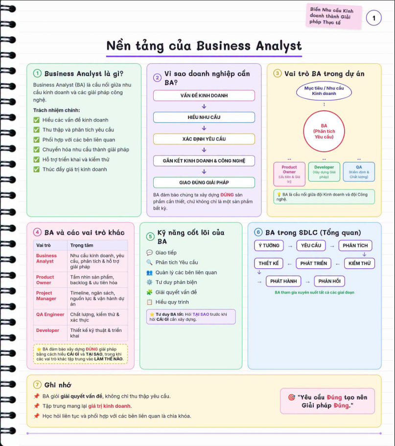
BA Trong Vòng Đời SDLC, So Sánh Waterfall vs. Agile Scrum
Vòng đời phát triển phần mềm · Sự hiện diện xuyên suốt của BA · Bàn giao sản phẩm qua từng giai đoạn
2.1. Vị Trí Xuyên Suốt Của BA Trong 6 Giai Đoạn SDLC
BA không rời khỏi dự án sau khi viết xong tài liệu SRS. Thay vào đó, BA đồng hành từ lúc khởi tạo ý tưởng đến nghiệm thu thực tế:
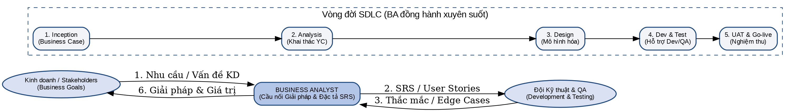
Xác định vấn đề kinh doanh, xây dựng Business Case, đánh giá tính khả thi (Technical, Operational, ROI), nhận diện Stakeholders.
Khai thác yêu cầu (Elicitation), phân tích GAP AS-IS vs TO-BE, lập tài liệu BRD / SRS / User Stories với Acceptance Criteria rõ ràng.
Mô hình hóa quy trình (Flowchart, BPMN, Swimlane), xây dựng Use Case, DFD Mức 0/1, ERD và phối hợp UI/UX vẽ Wireframe Figma.
Làm mịn Backlog (Refinement), giải đáp thắc mắc nghiệp vụ phát sinh hàng ngày cho Dev, review Test Cases cùng QA.
Soạn kịch bản UAT, hướng dẫn Business User kiểm thử thực tế trên Staging, thu thập phản hồi, ký biên bản UAT Sign-off.
Theo dõi các chỉ số KPI sau Go-live, đo lường ROI đạt được, ghi nhận bài học kinh nghiệm (Retrospective) và đề xuất Version 2.
2.2. So Sánh Chi Tiết: Mô Hình Waterfall vs. Agile Scrum
| Tiêu chí so sánh | Mô hình Thác Nước (Waterfall) | Mô hình Linh Hoạt (Agile / Scrum) |
|---|---|---|
| Bản chất quy trình | Tuyến tính, tuần tự qua từng cổng kiểm soát (Phase-gate). Xong giai đoạn này mới sang giai đoạn sau. | Lặp lại và tăng dần (Iterative & Incremental) qua các chu kỳ Sprint ngắn từ 2 – 4 tuần. |
| Mức độ thay đổi yêu cầu | Cố định ngay từ đầu. Thay đổi giữa chừng rất tốn kém và đòi hỏi quy trình Change Request (CR) khắt khe. | Chào đón thay đổi (Embrace change). Backlog liên tục được điều chỉnh theo phản hồi thực tế của người dùng. |
| Hình thức tài liệu hóa | Rất nặng (Heavy documentation): BRD, SRS, FDD hàng trăm trang phải ký duyệt (Sign-off) đóng băng trước khi code. | Tài liệu vừa đủ (Just enough documentation): Tập trung vào User Stories ngắn gọn, rõ Acceptance Criteria và Working Software. |
| Thời điểm bàn giao giá trị | Bàn giao 1 lần duy nhất ở cuối dự án (Big Bang). Khách hàng chỉ thấy phần mềm chạy được khi đã xong toàn bộ. | Bàn giao sản phẩm có thể sử dụng được (Potentially Shippable Increment) sau mỗi Sprint, nhận feedback ngay. |
| Ngữ cảnh phù hợp | Dự án ngân sách nhà nước, y tế, ngân hàng core nơi yêu cầu luật pháp cực kỳ cố định và rõ ràng từ đầu. | Dự án phần mềm hiện đại, ứng dụng khởi nghiệp, SaaS, hệ thống quản trị ERP nơi nghiệp vụ liên tục mở rộng. |
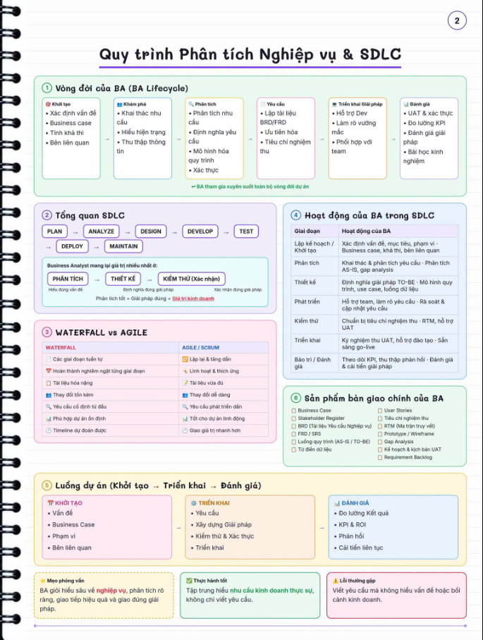
Vấn Đề Kinh Doanh, Business Case & Đánh Giá Tính Khả Thi
Xác định bài toán gốc rễ · Khung phân tích tính khả thi 3 chân kiềng · Công thức đo lường ROI & SMART
3.1. Business Case: Trả Lời Câu Hỏi "TẠI SAO DỰ ÁN NÀY ĐÁNG LÀM?"
Một Business Case vững chắc giúp bảo vệ ngân sách trước Ban Giám đốc và định hướng cho toàn bộ giải pháp sau này. Cấu trúc chuẩn gồm:
| Yếu tố Business Case | Ý nghĩa phân tích | Áp dụng thực tế vào Dự án EAPLS (Nhật ký Nông sản) |
|---|---|---|
| 1. Vấn đề kinh doanh (Problem) | Khoảng cách giữa hiện trạng yếu kém và kỳ vọng tăng trưởng | Hơn 85% HTX nông nghiệp Việt Nam ghi chép nhật ký bằng sổ tay, dẫn đến thất lạc số liệu, mất 3–5 ngày để tổng hợp báo cáo và không đủ điều kiện cấp mã vùng trồng VietGAP. |
| 2. Nhu cầu cấp thiết (Need) | Tại sao cần giải pháp ngay bây giờ? Chi phí cơ hội nếu không làm? | Các thị trường xuất khẩu (EU, Nhật Bản, Mỹ) bắt buộc phải minh bạch nguồn gốc từ hạt giống, phân bón, ngày cách ly hóa chất. Không số hóa đồng nghĩa bị loại khỏi chuỗi cung ứng. |
| 3. Giải pháp đề xuất (Solution) | Tổng quan giải pháp mức cao, công nghệ và quy trình áp dụng | Xây dựng nền tảng EAPLS gồm Web App quản trị cho Trưởng trại và Mobile App offline-first cho nông dân ngoài đồng ruộng, tích hợp bản đồ GIS và tem mã QR động. |
| 4. Lợi ích hữu hình & Vô hình | Giá trị mang lại về tiền bạc, thời gian, uy tín thương hiệu | Hữu hình: Giảm 80% thời gian tổng hợp báo cáo mùa vụ, tiết kiệm 15% vật tư phân bón do tính định mức tự động. Vô hình: Đạt chuẩn chứng nhận VietGAP, tăng niềm tin người tiêu dùng. |
| 5. Chi phí & Nguồn lực | Chi phí phát triển, hạ tầng máy chủ, đào tạo, bảo trì | Đầu tư chi phí phát triển ban đầu, chi phí hạ tầng Cloud (Cloudinary, VPS), thời gian đào tạo 50 nông dân sử dụng smartphone. |
| 6. Rủi ro & Khuyến nghị | Thách thức tiềm ẩn và quyết định Go / No-Go | Rủi ro nông dân ngại dùng điện thoại thông minh -> Khuyến nghị: Thiết kế UI tối giản dạng nút to kèm biểu tượng hình ảnh, hỗ trợ giọng nói. Quyết định: GO. |
3.2. Ba Chân Kiềng Đánh Giá Tính Khả Thi (Feasibility Analysis)
Công nghệ hiện tại có đáp ứng được không? Nhóm có đủ năng lực không? Ví dụ: EAPLS dùng Leaflet.js mã nguồn mở để vẽ bản đồ GIS thay vì Google Maps API trả phí đắt đỏ.
Quy trình mới có thực sự chạy được trong môi trường thực tế không? Nông dân ngoài đồng tay lấm đất có bấm được nút xác nhận không? Nếu giải pháp quá phức tạp, người dùng sẽ bỏ rơi phần mềm.
Lợi ích kinh tế có vượt trội chi phí đầu tư? ROI = [(Lợi ích - Chi phí) / Chi phí] * 100%. Với dự án ERP/D365, ROI thường thể hiện ở việc cắt giảm nhân sự kiểm toán thủ công và giảm tồn kho chết.
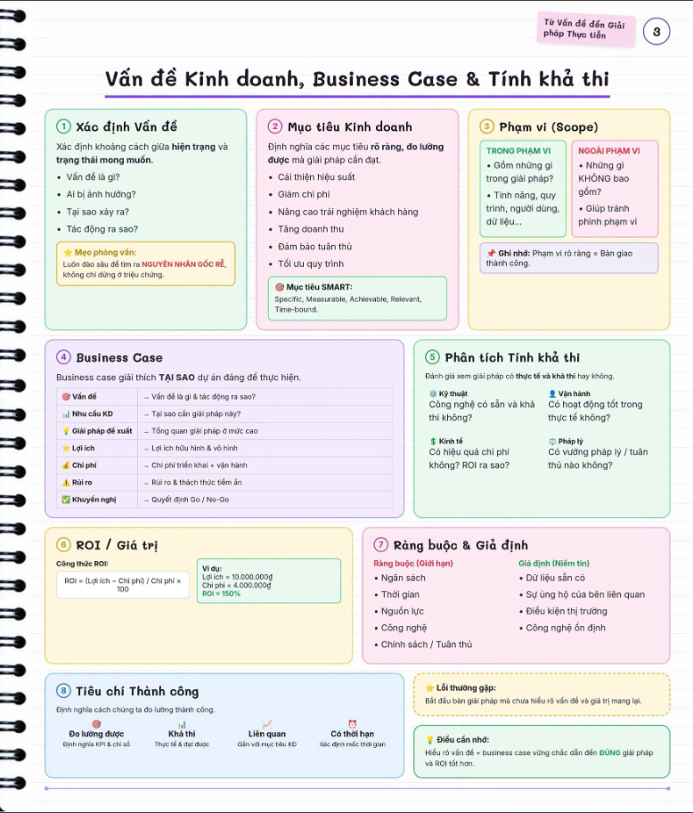
Stakeholder Management: Ma Trận Quyền Lực – Quan Tâm & Ma Trận RACI
Phân loại bên liên quan · Chiến lược tương tác 4 góc phần tư · Ma trận RACI dự án EAPLS
4.1. Ma Trận Quyền Lực – Quan Tâm (Power – Interest Grid)
Quản lý các bên liên quan quyết định hơn 70% thành bại của giai đoạn lấy yêu cầu. BA phân loại Stakeholder vào 4 nhóm chiến lược:
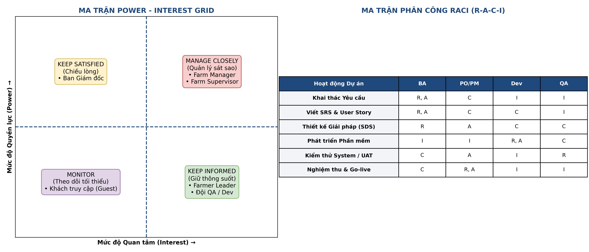
Nhân vật cốt lõi: Trưởng nông trại (Farm Manager), Giám sát viên (Farm Supervisor), Giám đốc dự án.
Hành động BA: Phỏng vấn sâu 1-1, tổ chức workshop đều đặn, gửi báo cáo tiến độ tuần, lấy chữ ký nghiệm thu từng phân hệ quan trọng.
Nhân vật cốt lõi: Ban Giám đốc Sở Nông nghiệp, Nhà đầu tư tài chính, Trưởng phòng Kế toán.
Hành động BA: Không gửi email chi tiết kỹ thuật làm họ ngập thông tin. Chỉ gửi Executive Summary, Dashboard KPI tổng quan và chứng minh hiệu quả tài chính.
Nhân vật cốt lõi: Nông dân nòng cốt (Farmer Leader), Đội kiểm thử QA, Đội Dev.
Hành động BA: Họp Daily Scrum 15 phút, cập nhật User Stories lên Jira/Confluence, tổ chức Demo sản phẩm chạy thử để nhận phản hồi trực tiếp từ người dùng thực địa.
Nhân vật cốt lõi: Khách truy cập công khai xem nguồn gốc (Guest), Đơn vị cung ứng bao bì.
Hành động BA: Cung cấp tài liệu hướng dẫn tra cứu công khai (FAQ, User Manual), theo dõi phản hồi qua trang web mà không tốn nhiều nguồn lực họp hành.
4.2. Ma Trận RACI Dự Án EAPLS
R (Responsible): Người trực tiếp thực hiện công việc. · A (Accountable): Người chịu trách nhiệm giải trình cuối cùng (duy nhất 1 người có quyền phê duyệt). · C (Consulted): Người được tham vấn ý kiến chuyên môn hai chiều. · I (Informed): Người được thông báo một chiều về kết quả.
| Hoạt động dự án | BA (Đoàn Vĩnh Hưng) | PO / PM | Dev Team | QA Team | End-User (Trại) |
|---|---|---|---|---|---|
| Khai thác yêu cầu (Elicitation) | R | A | C | I | C |
| Viết tài liệu SRS & User Stories | R | A | C | C | I |
| Thiết kế Kiến trúc Giải pháp (SDS) | C | A | R | I | I |
| Phát triển Mã nguồn (Development) | C (Hỗ trợ nghiệp vụ) | I | R | I | I |
| Kiểm thử Hệ thống (System Test) | C | I | I (Sửa bug) | R | I |
| Nghiệm thu Người dùng (UAT) & Go-live | R (Soạn kịch bản) | A (Chốt Go-live) | I | C | A (Ký nhận) |
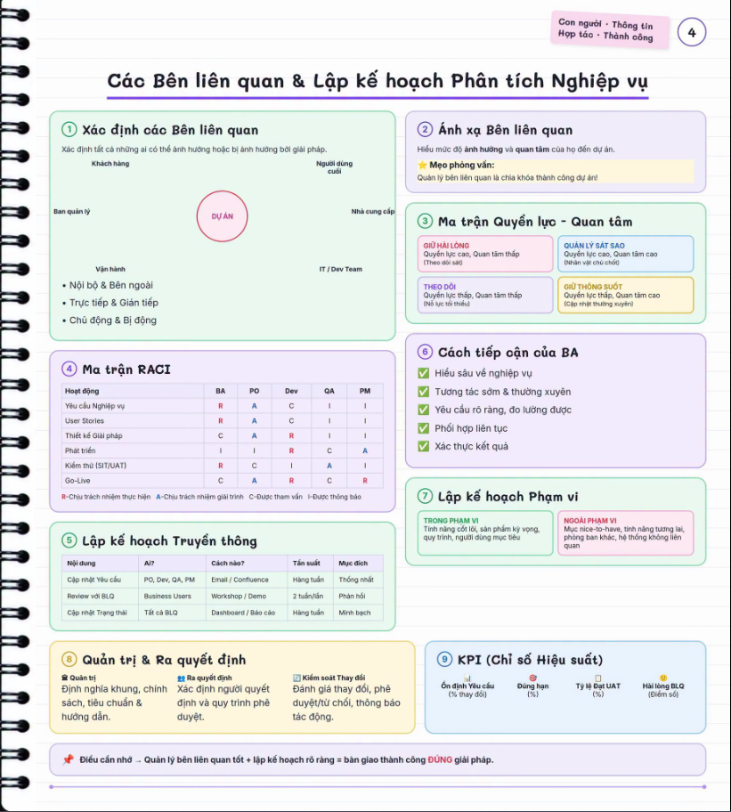
Khai Thác, Phân Tích & Mô Hình Hóa Yêu Cầu
10 Kỹ Thuật Khai Thác Yêu Cầu (Elicitation) & Kỹ Năng Đào Sâu 5W1H
Bộ công cụ khai thác đa chiều · 5W1H framework · Cách xử lý khi khách hàng đưa yêu cầu mơ hồ
Khách hàng hiếm khi biết chính xác họ cần gì về mặt kỹ thuật. Họ chỉ nói về triệu chứng hoặc mong muốn bề nổi (e.g. "Tôi muốn app thông minh"). Nhiệm vụ của BA là sử dụng phối hợp nhiều kỹ thuật khai thác để tìm ra Nhu cầu Thực sự (True Business Need) và nguyên nhân gốc rễ.
5.1. Bảng 10 Kỹ Thuật Khai Thác Chuẩn & Ví Dụ Thực Tế Trong EAPLS
| # | Kỹ thuật | Mục đích & Ngữ cảnh áp dụng | Ưu điểm & Nhược điểm | Ví dụ thực tế áp dụng trong EAPLS |
|---|---|---|---|---|
| 1 | Phỏng vấn (Interview) | Trao đổi 1-1 có cấu trúc hoặc bán cấu trúc để hiểu sâu quy trình và quan điểm cá nhân. | Hiểu sâu, tạo mối quan hệ tốt. Nhược điểm: Tốn thời gian, góc nhìn có thể phiến diện. | Phỏng vấn Trưởng trại (Farm Manager) để hiểu quy trình xét duyệt nhật ký canh tác và điều kiện bàn giao lô đất. |
| 2 | Workshop | Tập hợp các bên liên quan khác nhau để thảo luận tập trung, giải quyết xung đột và đồng thuận phạm vi. | Đồng thuận nhanh, đa góc nhìn. Nhược điểm: Dễ bị chi phối bởi người có chức vụ cao nếu BA không điều phối tốt. | Tổ chức Workshop 2 tiếng giữa Trưởng trại, Giám sát viên và Đội Dev để thống nhất quy tắc cảnh báo hạn cách ly thuốc trừ sâu. |
| 3 | Brainstorming | Sáng tạo tối đa số lượng ý tưởng trong thời gian ngắn mà không vội phán xét đúng sai. | Kích thích tư duy đổi mới. Nhược điểm: Có thể sinh ra nhiều ý tưởng xa vời, không khả thi về công nghệ. | Brainstorming cách hiển thị ranh giới đất nông nghiệp trực quan -> Nảy ra ý tưởng tích hợp bản đồ GIS đa giác (Polygon). |
| 4 | Quan sát (Observation) | Đi thực địa (Job Shadowing) để xem người dùng thực tế thao tác công việc hàng ngày ra sao. | Thấy được điểm nghẽn thực tế mà người dùng quên kể. Nhược điểm: Người dùng có thể làm điệu bộ khác khi bị quan sát (Hawthorne Effect). | Trực tiếp ra ruộng quan sát nông dân ghi sổ tay: Phát hiện tay dính bùn đất khó gõ bàn phím ảo, mạng 4G chập chờn -> Đề xuất làm nút to, lưu offline. |
| 5 | Khảo sát (Survey / Questionnaire) | Thu thập dữ liệu định lượng nhanh chóng từ số lượng lớn người dùng phân tán địa lý. | Rẻ, độ bao phủ rộng. Nhược điểm: Tỷ lệ phản hồi thấp, câu hỏi mơ hồ sẽ nhận câu trả lời vô giá trị. | Gửi bảng hỏi Google Forms khảo sát 50 hộ nông dân về loại smartphone đang sử dụng (hệ điều hành, dung lượng RAM, kích thước màn hình). |
| 6 | Phân tích Tài liệu (Document Analysis) | Nghiên cứu tài liệu sẵn có: quy trình SOP, mẫu biểu giấy, quy định VietGAP, báo cáo tài chính. | Nắm bắt quy chuẩn ngành nhanh. Nhược điểm: Tài liệu cũ thường lỗi thời và khác xa thực tế vận hành. | Phân tích Sổ tay hướng dẫn tiêu chuẩn VietGAP TCVN 11892-1:2017 và danh mục thuốc bảo vệ thực vật được phép sử dụng tại Việt Nam. |
| 7 | Nhóm Tập trung (Focus Group) | Tập hợp nhóm 6–10 người dùng tiêu biểu có cùng đặc tính để thảo luận sâu về cảm nhận, kỳ vọng. | Thu thập phản hồi cảm xúc chất lượng cao. Nhược điểm: Khó chọn đối tượng đại diện công tâm. | Mời 8 Farmer Leader đại diện các đội sản xuất lên trải nghiệm bản thử nghiệm Mobile App và ghi nhận khó khăn khi dùng. |
| 8 | Tạo mẫu (Prototyping / Wireframing) | Xây dựng bản mô phỏng giao diện tương tác (Figma) để khách hàng "sờ nắn" giải pháp sớm. | Giảm thiểu hiểu lầm yêu cầu cực tốt. Nhược điểm: Khách hàng dễ nhầm bản prototype là phần mềm đã hoàn thành. | Vẽ Wireframe Figma màn hình Quét mã QR nguồn gốc nông sản và màn hình Vẽ lô đất để Farm Manager duyệt giao diện trước khi code. |
| 9 | Nghiên cứu Hệ thống Hiện tại (Reverse Engineering) | Rà soát phần mềm cũ, các file Excel quản lý hiện hành và giải pháp đối thủ cạnh tranh. | Kế thừa logic nghiệp vụ chuẩn. Nhược điểm: Dễ bị bó hẹp tư duy theo lối mòn cũ. | So sánh tính năng của EAPLS với các nền tảng thương mại hiện hành như FaceFarm và iCheck Trace để tìm khoảng trống (Gap). |
| 10 | Phân tích Giao diện Tích hợp (Interface Analysis) | Đặc tả chi tiết các điểm giao tiếp dữ liệu giữa hệ thống đang xây với hệ thống bên thứ ba. | Bảo đảm tương thích và an toàn dữ liệu. Nhược điểm: Đòi hỏi kiến thức kỹ thuật sâu về API, Data Schema. | Phân tích API kết nối thời tiết Open-Meteo API (truyền kinh độ/vĩ độ, nhận nhiệt độ/độ ẩm) và Cloud Storage Cloudinary để lưu ảnh bằng chứng. |
5.2. Khung Câu Hỏi 5W1H & Kịch Bản Đào Sâu Một Yêu Cầu Mơ Hồ
Khách hàng nói: "Tôi muốn hệ thống quản lý phân bón thật thông minh, ai làm gì sai là phải chặn ngay!"
BA Đoàn Vĩnh Hưng phân rã bằng 5W1H như sau:
- WHO (Ai): Ai là người nhập dữ liệu bón phân? (Nông dân - Farmer Leader). Ai duyệt? (Giám sát viên - Farm Supervisor). Ai xem báo cáo? (Farm Manager).
- WHAT (Cái gì): Cụ thể "sai" là sai cái gì? -> Trả lời: Bón quá liều lượng quy định, bón sai loại phân cho giai đoạn sinh trưởng, hoặc sử dụng thuốc bảo vệ thực vật bị cấm.
- WHEN (Khi nào): Chặn vào thời điểm nào? Ngay khi nông dân chọn vật tư, hay khi bấm gửi báo cáo, hay khi xuất hàng? -> Trả lời: Cảnh báo ngay khi chọn vật tư, và khóa nút nghiệm thu nếu vi phạm thời gian cách ly.
- WHERE (Ở đâu): Thao tác diễn ra ngoài đồng qua Mobile App hay tại văn phòng qua Web Dashboard? -> Trả lời: Ngoài đồng qua Mobile App offline.
- WHY (Tại sao): Tại sao việc chặn này lại sống còn? -> Trả lời: Nếu không kiểm soát, nông sản thu hoạch còn tồn dư hóa chất sẽ bị phạt và hủy toàn bộ lô hàng theo chuẩn VietGAP.
- HOW (Như thế nào): Hệ thống thực hiện việc này bằng cách nào? -> Trả lời: Thiết lập Business Rule BR-MAT-02 so sánh lượng phân bón nhập vào với định mức tối đa tính theo diện tích m2 của lô đất. Nếu vượt quá, hiển thị cảnh báo đỏ và yêu cầu nhập lý do giải trình.
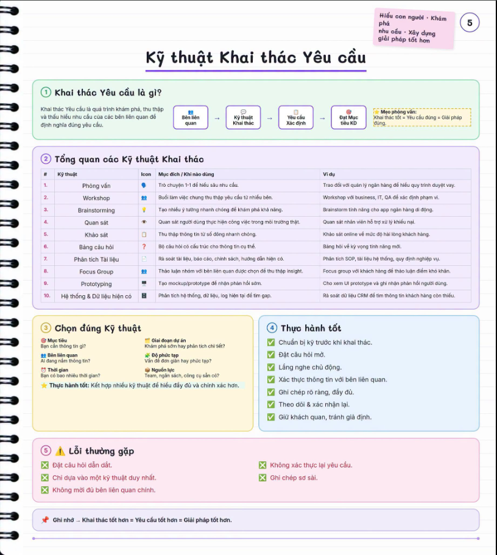
Phân Loại Yêu Cầu, 8 Thuộc Tính Chất Lượng & Bộ Tài Liệu BRD / SRS / FRD
4 cấp độ yêu cầu theo BABOK · Phân biệt Functional vs Non-Functional · So sánh BRD vs SRS vs FRD vs FDD
6.1. Bốn Cấp Độ Yêu Cầu (Theo Tiêu Chuẩn BABOK Guide)
Mục tiêu cấp cao của toàn tổ chức, lý do dự án tồn tại. Ví dụ: "Đạt 100% diện tích canh tác được cấp mã số vùng trồng VietGAP và giảm 25% chi phí tồn kho vật tư."
Nhu cầu cụ thể của từng nhóm người dùng để hoàn thành công việc. Ví dụ: "Farm Manager cần xem báo cáo tổng hợp tiến độ các mùa vụ theo thời gian thực để phân bổ phân bón kịp thời."
• Chức năng (Functional): Phần mềm làm được gì (Đăng nhập, Vẽ bản đồ GIS, Tính toán định lượng, Duyệt báo cáo, Sinh mã QR).
• Phi chức năng (Non-Functional): Phần mềm hoạt động tốt ra sao (Bảo mật JWT, Tốc độ tải < 3s, Hoạt động 99.9% uptime, Chạy mượt trên Android 10+).
Những việc cần làm để chuyển đổi êm đẹp từ hệ thống cũ sang hệ thống mới: Di chuyển dữ liệu cũ (Data Migration), Đào tạo người dùng (Training), Kế hoạch chạy song song (Parallel Run).
6.2. So Sánh Bản Chất: BRD vs. SRS vs. FRD vs. FDD
| Tài liệu | Tên đầy đủ | Đối tượng độc giả chính | Nội dung trọng tâm | Ai là người viết? |
|---|---|---|---|---|
| BRD | Business Requirements Document | Ban Giám đốc, PO, Sponsor, Khách hàng | Tập trung vào CÁI GÌ & TẠI SAO. Nêu mục tiêu kinh doanh, bài toán cần giải, phạm vi dự án (In-scope/Out-scope), phân tích ROI. Không đi sâu vào kỹ thuật. | Business Analyst (phía nghiệp vụ) / Lead BA |
| SRS | Software Requirements Specification | Đội Dev, QA Tester, Solution Architect | Tập trung vào HỆ THỐNG PHẢI LÀM GÌ. Đặc tả chi tiết từng Use Case, Data Dictionary, Business Rules, API Specs, Non-functional Requirements. | IT Business Analyst / System Analyst |
| FRD | Functional Requirements Document | Product Team, Dev, Functional Consultant | Tập trung vào hành vi chức năng giao diện, luồng thao tác màn hình, logic tính toán, thông báo lỗi cho người dùng. (Thường dùng trong các dự án ERP/CRM). | Functional Consultant / BA |
| FDD | Functional Design Document | Technical Lead, ERP Developers | Thiết kế chi tiết giải pháp chức năng trước khi code, ánh xạ tới bảng dữ liệu cụ thể trong hệ thống ERP (như Dynamics 365 tables). | Senior Functional Consultant |
6.3. Tám Thuộc Tính Của Một Yêu Cầu Chất Lượng (Quality Checklist)
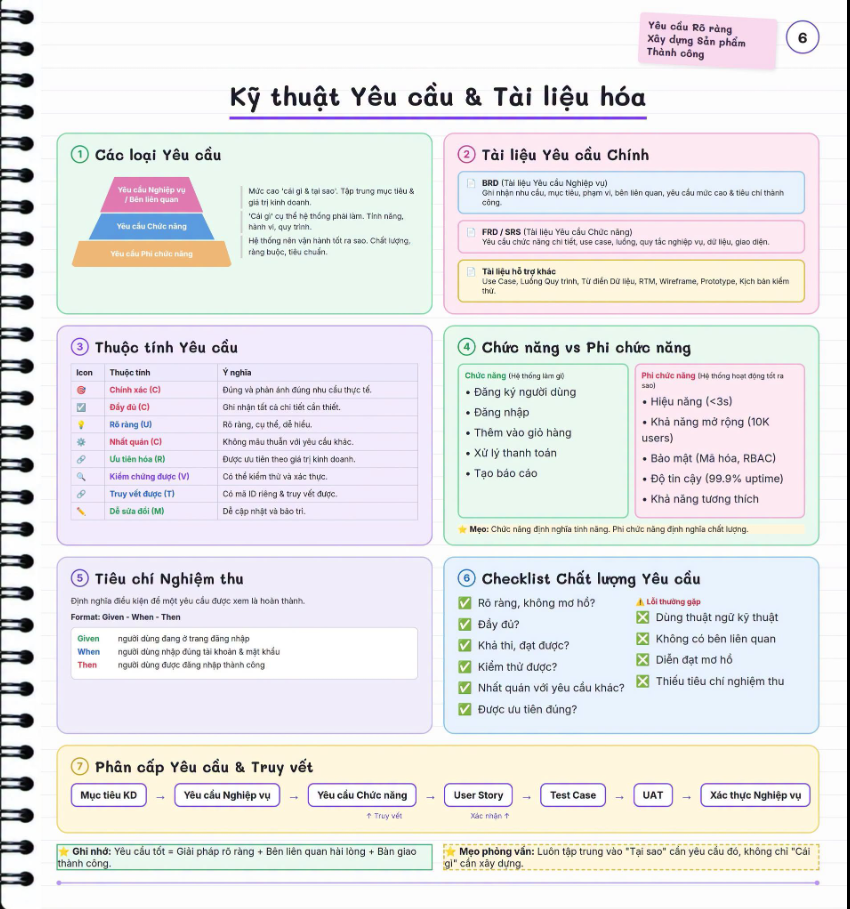
Mô Hình Hóa Nghiệp Vụ Toàn Diện: Flowchart, Use Case, Activity, DFD & ERD
Ngôn ngữ hình ảnh trực quan cho BA · 6 Sơ đồ kỹ thuật cốt lõi trong dự án EAPLS
Một sơ đồ chuẩn xác có giá trị bằng hàng nghìn dòng chữ mô tả. Trong dự án EAPLS, đội ngũ BA đã xây dựng đầy đủ 6 loại sơ đồ để kết nối các bên liên quan:
7.1. Sơ Đồ Quy Trình Công Việc (Flowchart)
Minh họa từng bước tuần tự và các điểm rẽ nhánh điều kiện khi Trưởng trại (Farm Manager) tạo một Kế hoạch Canh tác mới:
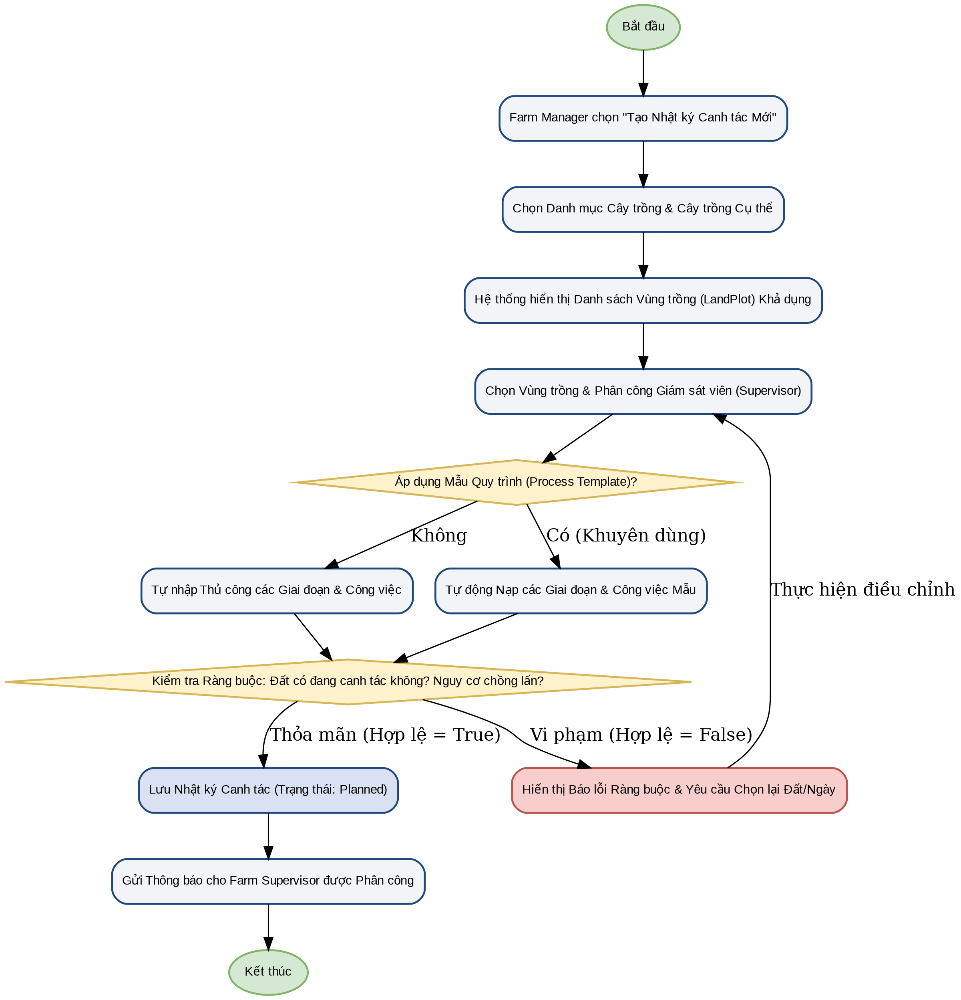
7.2. Sơ Đồ Use Case Tổng Quan Hệ Thống EAPLS
Xác định ranh giới hệ thống (System Boundary) và 4 Tác nhân chính (Actors) tương tác với 12 chức năng trọng điểm:
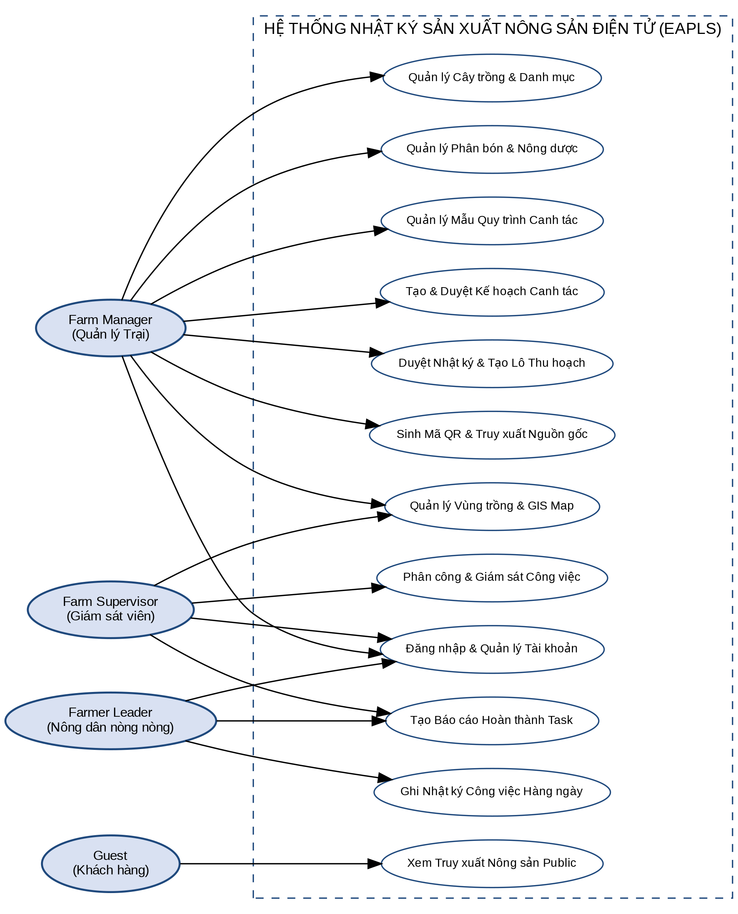
7.3. Sơ Đồ Hoạt Động Phân Làn (Activity Diagram Swimlane)
Thể hiện sự phối hợp nhịp nhàng giữa 3 thực thể: Nông dân thực địa, Giám sát viên và Hệ thống EAPLS tự động kiểm tra hạn cách ly thuốc bảo vệ thực vật:
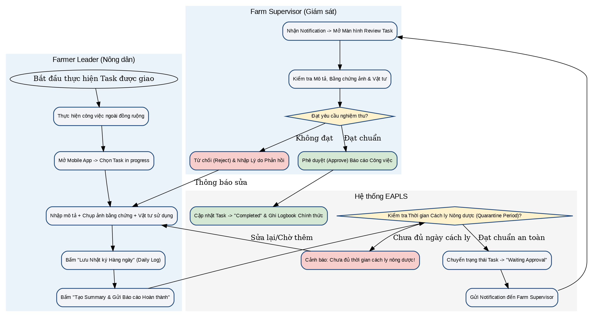
7.4. Sơ Đồ Luồng Dữ Liệu: DFD Mức 0 (Context Diagram) & DFD Mức 1
DFD giúp đội kỹ thuật nhìn rõ luồng dữ liệu vào/ra, các tiến trình xử lý và kho dữ liệu lưu trữ:
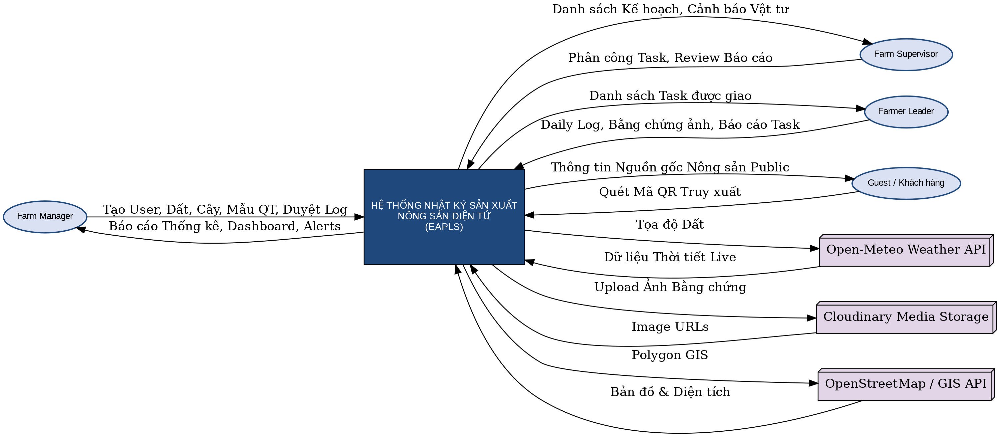
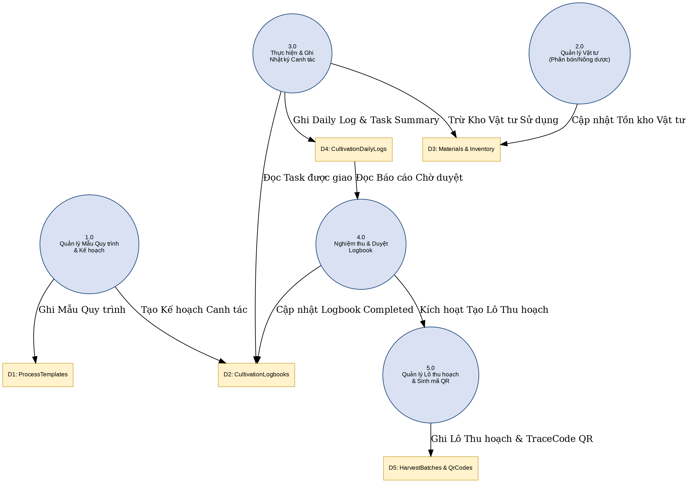
7.5. Sơ Đồ Thực Thể Quan Hệ (ERD Database Model)
Mô hình dữ liệu chuẩn hóa trên MySQL 8.0 với các mối quan hệ 1:1, 1:N giữa 8 thực thể trung tâm:
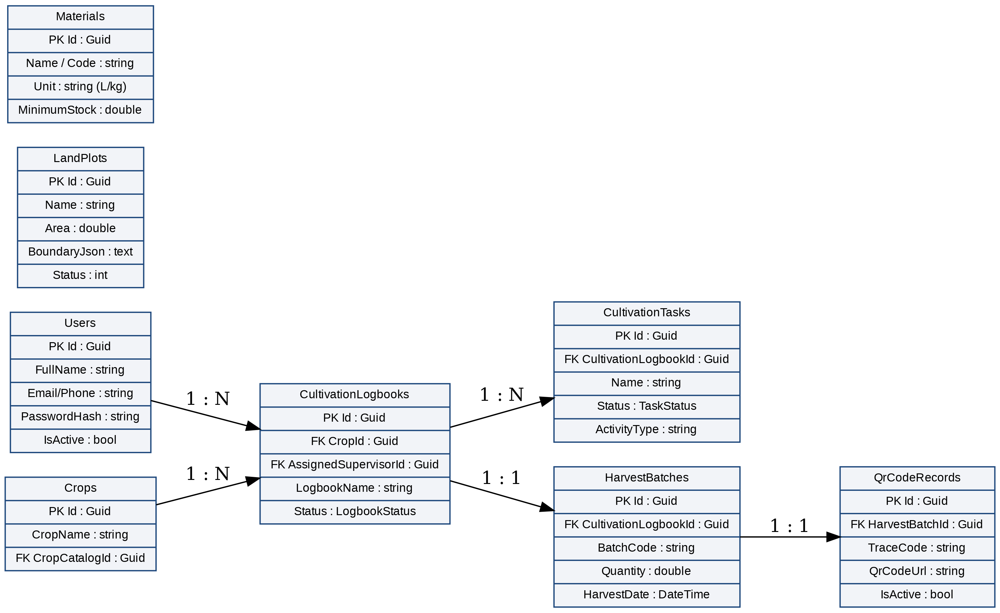
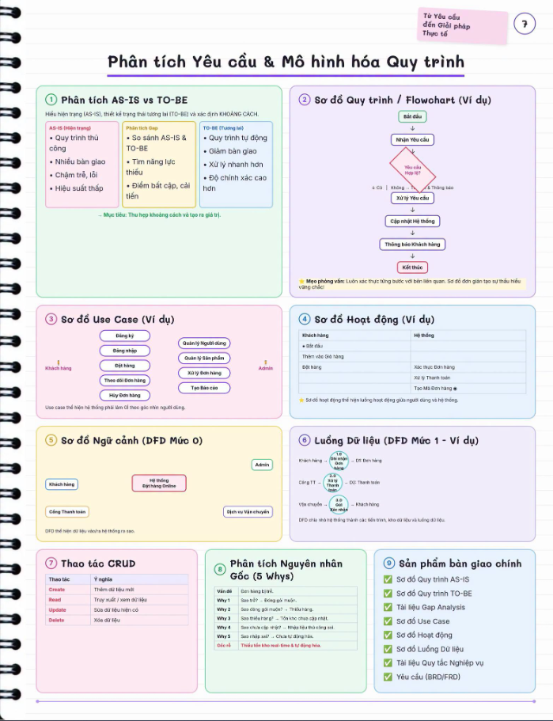
Phân Tích GAP (AS-IS vs. TO-BE) & Phương Pháp Tìm Nguyên Nhân Gốc Rễ 5 Whys
Phương pháp luận chuyển đổi số nghiệp vụ · Bảng đối chiếu hiện trạng và tương lai · 5 Whys trong bài toán nông nghiệp
8.1. Bảng Phân Tích GAP Analysis Chi Tiết (AS-IS vs. TO-BE)
| Khía cạnh nghiệp vụ | Hiện trạng Thủ công (AS-IS) | Khoảng trống & Điểm nghẽn (GAP) | Mục tiêu Tương lai EAPLS (TO-BE) | Giải pháp BA đề xuất |
|---|---|---|---|---|
| Ghi chép nhật ký | Ghi bằng bút bi vào sổ giấy cá nhân sau ngày làm việc. | Dữ liệu bị rách hỏng, bôi xóa, ghi nhớ sai lệch, không có ảnh chứng minh. | Nhật ký số điện tử theo thời gian thực (Real-time e-Logbook). | Mobile App cho phép chụp ảnh bằng chứng đính kèm tọa độ GPS và lưu trữ Cloudinary. |
| Quản lý đất đai & Vùng trồng | Ước lượng diện tích bằng sào/mẫu, ranh giới ghi nhớ miệng hoặc cắm cọc tre. | Tranh chấp đất đai, tính sai lượng phân bón/nước tưới, không có bản đồ số. | Bản đồ số GIS minh bạch từng mét vuông đất, lưu tọa độ vệ tinh. | Tích hợp bản đồ OpenStreetMap/Leaflet, cho phép vẽ Polygon và tự động tính diện tích m2. |
| Kiểm soát Nông dược & Cách ly | Nông dân tự nhớ ngày phun thuốc trừ sâu, tự quyết định ngày thu hoạch. | Nguy cơ ngộ độc thực phẩm, tồn dư hóa chất vi phạm chuẩn VietGAP, bị cấm xuất khẩu. | Hệ thống tự động kiểm soát hạn cách ly nghiêm ngặt (Quarantine Period). | Thiết lập Business Rule BR-TSK-07: Khóa nút tạo Báo cáo Thu hoạch nếu chưa đủ số ngày cách ly an toàn. |
| Truy xuất Nguồn gốc | In tem mã vạch cố định dán lên bao bì, quét chỉ ra website giới thiệu công ty chung chung. | Người tiêu dùng và đối tác xuất khẩu không tin tưởng, dễ bị làm giả dán đè tem. | Mã QR động gắn liền với từng lô thu hoạch (Harvest Batch) độc bản. | Sinh mã QR động dẫn đến trang public hiển thị trọn vẹn toàn bộ nhật ký bón phân/chăm sóc đã được kiểm duyệt. |
8.2. Kỹ Thuật Đào Sâu Nguyên Nhân Gốc Rễ: Mô Hình 5 Whys
Vấn đề ban đầu: Một lô bưởi xuất khẩu của HTX bị đối tác nước ngoài trả về và xử phạt vì vi phạm hàm lượng thuốc bảo vệ thực vật.
- Why 1: Tại sao nông sản bị tồn dư hóa chất? -> Vì nông dân thu hoạch quả chỉ 3 ngày sau khi phun thuốc trừ rầy.
- Why 2: Tại sao lại thu hoạch sau 3 ngày trong khi thuốc yêu cầu cách ly 14 ngày? -> Vì nông dân không nhớ chính xác ngày phun thuốc của lô đất đó.
- Why 3: Tại sao nông dân không nhớ ngày phun thuốc? -> Vì cuốn sổ tay ghi chép để ở nhà bị ướt mưa rách nát, nông dân ước lượng bằng trí nhớ.
- Why 4: Tại sao Giám sát viên không kiểm tra và ngăn chặn trước khi cho thu hoạch? -> Vì Giám sát viên quản lý tới 30 hộ cùng lúc, không có công cụ đối soát tập trung.
- Why 5 (GỐC RỄ): Tại sao HTX không có công cụ kiểm soát tự động? -> Vì quy trình hoàn toàn phụ thuộc vào sự tự giác và ghi chép thủ công rời rạc, thiếu một hệ thống phần mềm trung tâm tự động khóa quy trình khi vi phạm ràng buộc an toàn.
Kết luận giải pháp của BA: Xây dựng phân hệ Kiểm tra Ràng buộc Tự động (Automated Validation Rule) trong EAPLS, biến quy tắc an toàn thành logic cứng trên phần mềm!
Agile/Scrum, User Story, Truy Vết & Kỹ Năng Dữ Liệu BA
User Story, Tiêu Chuẩn INVEST, Acceptance Criteria & Kỹ Thuật Ưu Tiên Backlog
Viết User Story chuẩn quốc tế · Tiêu chuẩn INVEST · Kịch bản Given-When-Then · MoSCoW, RICE, WSJF, Kano
9.1. Cấu Trúc User Story & Sơ Đồ Cây Phân Rã Yêu Cầu
User Story là một mô tả ngắn gọn, dễ hiểu về nhu cầu của người dùng theo góc nhìn của chính họ:
Là một [Loại người dùng], Tôi muốn [Hành động / Tính năng mong muốn], Để [Mục tiêu / Giá trị kinh doanh đạt được].
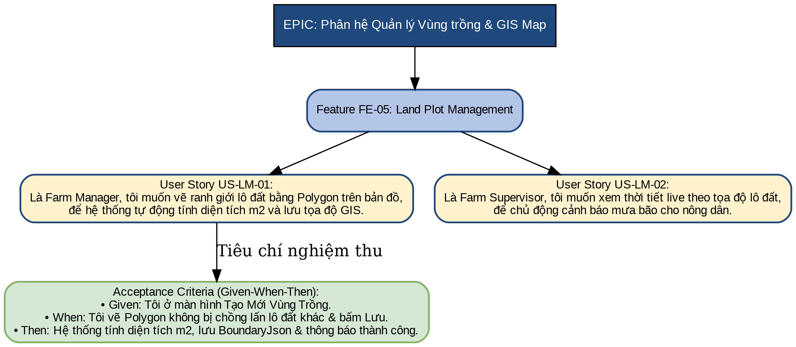
9.2. Tiêu Chuẩn INVEST Cho Một User Story Chất Lượng
| Chữ cái | Tiêu chí INVEST | Giải thích chi tiết | Cách kiểm tra trong dự án EAPLS |
|---|---|---|---|
| I | Independent (Độc lập) | Story nên độc lập tối đa với các story khác, có thể bàn giao riêng mà không bị chặn chéo. | Story "Vẽ bản đồ lô đất" có thể hoàn thành và demo riêng rẽ trước khi code story "Gắn vật tư vào lô đất". |
| N | Negotiable (Có thể thương lượng) | Story không phải là bản hợp đồng cứng nhắc; chi tiết được trao đổi linh hoạt giữa BA, PO và Dev. | Ban đầu dự định vẽ bản đồ 3D vệ tinh phức tạp -> Thương lượng giảm xuống bản đồ 2D phẳng Leaflet để kịp tiến độ. |
| V | Valuable (Có giá trị) | Phải mang lại giá trị rõ ràng cho người dùng cuối hoặc doanh nghiệp, không viết story thuần kỹ thuật (như "Tạo database"). | Viết: "Là Nông dân, tôi muốn xem dự báo thời tiết tại lô đất để hoãn phun thuốc nếu trời sắp mưa" -> Giá trị cực cao! |
| E | Estimable (Ước lượng được) | Đội Dev phải hiểu đủ rõ để có thể ước lượng độ phức tạp (Story Points / Hours). | Nếu Dev nói không ước lượng được -> Dấu hiệu story quá mơ hồ hoặc quá lớn, BA cần làm mịn tiếp. |
| S | Small (Đủ nhỏ) | Kích thước vừa vặn để hoàn thành trọn vẹn trong vòng 1 Sprint (2–4 tuần), lý tưởng là 2–5 ngày. | Nếu một Story to bằng cả phân hệ -> Tách nhỏ thành nhiều slice nhỏ hơn (Split by User Role, Happy path vs Exception). |
| T | Testable (Kiểm thử được) | Phải có tiêu chí nghiệm thu rõ ràng để QA viết Test Case và PO xác nhận nghiệm thu. | Luôn đi kèm bộ kịch bản Acceptance Criteria định dạng Given - When - Then. |
9.3. Tiêu Chí Nghiệm Thu Acceptance Criteria (AC) Chi Tiết Trong EAPLS
User Story: Là Farm Manager, Tôi muốn vẽ ranh giới lô đất bằng hình đa giác (Polygon) trên bản đồ vệ tinh tương tác, Để hệ thống tự động tính diện tích m2 và lưu trữ tọa độ GIS phục vụ quản lý vùng trồng chuẩn xác.
Acceptance Criteria (Given - When - Then):
- Given: Tôi đã đăng nhập với vai trò Farm Manager và mở màn hình "Tạo Mới Vùng Trồng".
- When: Tôi chọn công cụ "Draw Polygon", chấm các điểm ranh giới khép kín trên bản đồ không giao cắt với bất kỳ lô đất active nào khác và nhấn nút "Lưu Vùng Trồng".
- Then: Hệ thống tự động tính Diện tích (Area m2) dựa trên tọa độ đỉnh, lưu chuỗi JSON tọa độ vào trường
BoundaryJson, hiển thị thông báo thành côngMSG-LM-23và chuyển hướng về danh sách lô đất với trạng thái "Khả dụng".
- Given: Tôi đang ở màn hình "Tạo Mới Vùng Trồng".
- When: Tôi vẽ Polygon có khu vực giao cắt hoặc đè lên một lô đất đã tồn tại trong hệ thống và nhấn "Lưu Vùng Trồng".
- Then: Hệ thống ngăn chặn việc lưu dữ liệu vào Database, tô viền đỏ nhấp nháy tại phần diện tích bị giao cắt trên bản đồ và hiển thị thông báo lỗi
MSG-LM-25: "Ranh giới lô đất bị chồng lấn với lô đất [Tên_Lô_Đất] đã tồn tại trong hệ thống. Vui lòng chỉnh sửa lại ranh giới!".
9.4. Bốn Phương Pháp Ưu Tiên Backlog Phổ Biến
• Must Have (Bắt buộc): Sống còn để hệ thống chạy được (Đăng nhập, ghi log, sinh QR).
• Should Have (Nên có): Quan trọng nhưng có giải pháp thay thế tạm thời (Cảnh báo thời tiết tự động).
• Could Have (Có thì tốt): Thêm tiện ích nếu còn dư thời gian (Xuất báo cáo PDF giao diện đẹp).
• Won't Have (Chưa làm đợt này): Thống nhất không làm trong release hiện tại để bảo vệ tiến độ (AI nhận diện bệnh cây trồng).
WSJF = Cost of Delay / Job Size (Thời gian thực hiện)
Trong đó: Cost of Delay = Giá trị kinh doanh + Tính khẩn cấp + Giảm thiểu rủi ro.
-> Tính năng nào mang lại giá trị cao mà thời gian code ngắn sẽ được làm trước tiên!
RICE Score = (Reach x Impact x Confidence) / Effort
Giúp định lượng khách quan bằng số liệu, tránh tình trạng ưu tiên tính năng dựa trên cảm tính hoặc vì "Sếp thích".
Phân loại tính năng theo mức độ hài lòng khách hàng: Cơ bản bắt buộc (Must-be) · Hiệu năng tỷ lệ thuận (Performance) · Tính năng tạo bất ngờ thích thú (Delighters / Attractive).
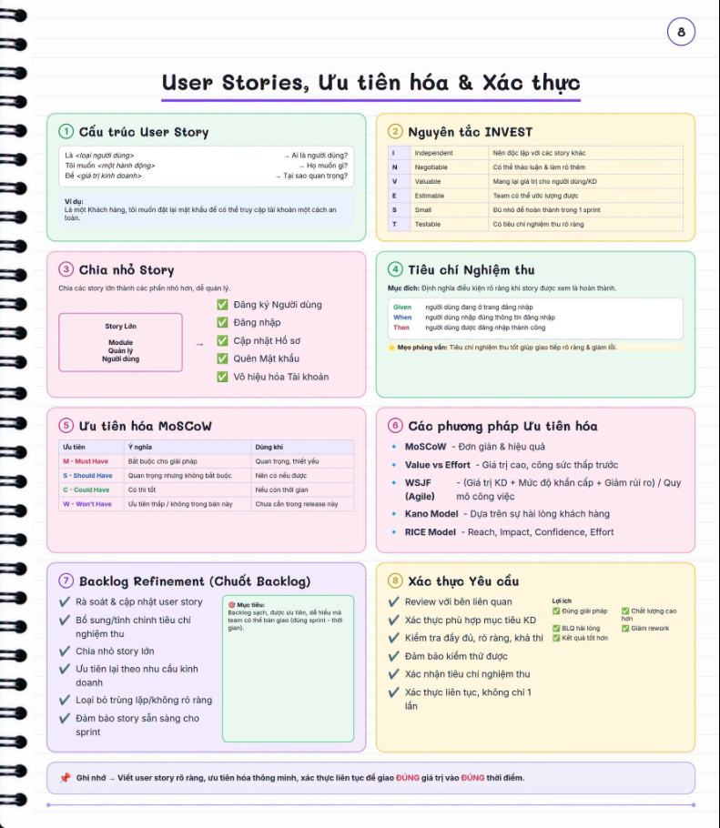
Khung Làm Việc Scrum Framework, Các Nghi Thức & Bộ Tiêu Chuẩn DoR / DoD
3 Vai trò · 5 Nghi lễ · 3 Artifacts · Definition of Ready vs. Definition of Done trong EAPLS
10.1. Vòng Đời Hoạt Động Của Scrum & Vai Trò Của BA
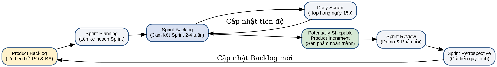
| Nghi thức Scrum | Mục đích cốt lõi | Đóng góp cụ thể của BA (Đoàn Vĩnh Hưng trong EAPLS) |
|---|---|---|
| Sprint Planning (Lập kế hoạch Sprint) | Chọn các Story ưu tiên từ Product Backlog đưa vào Sprint Backlog để cam kết hoàn thành. | Trình bày mục tiêu nghiệp vụ, giải thích tiêu chí Acceptance Criteria, làm rõ luồng UI/UX để Dev ước lượng Story Points chuẩn xác. |
| Daily Scrum (Họp đứng hàng ngày 15p) | Đồng bộ tiến độ: Đã làm gì hôm qua? Hôm nay làm gì? Có khó khăn (Blocker) gì không? | Lắng nghe Dev/QA phản ánh khúc mắc về logic nghiệp vụ, hỗ trợ gỡ rối ngay trong ngày mà không làm gián đoạn sprint. |
| Backlog Refinement (Làm mịn / Chuốt Backlog) | Rà soát, bổ sung chi tiết, chia nhỏ story to (Epic) và chuẩn bị sẵn sàng cho Sprint tới. | Chủ trì buổi refinement: viết lại story chưa rõ, đính kèm mockup wireframe, xác nhận tiêu chuẩn DoR. |
| Sprint Review / Demo (Trình diễn sản phẩm) | Demo tính năng chạy được cho Stakeholders và PO nghiệm thu, nhận phản hồi thực tế. | Dẫn dắt kịch bản demo tính năng theo góc nhìn người dùng thực (End-to-End User Journey), ghi nhận phản hồi vào backlog mới. |
| Sprint Retrospective (Họp cải tiến quy trình) | Rút kinh nghiệm nội bộ: Cái gì làm tốt? Cái gì chưa tốt? Hành động cải tiến Sprint tới? | Đề xuất cải tiến phương thức phối hợp giữa BA và QA (ví dụ: chia sẻ Test Case sớm hơn trước khi bắt đầu code). |
10.2. So Sánh DoR (Definition of Ready) vs. DoD (Definition of Done)
Bảo đảm Story đã đủ chín muồi để đưa vào Sprint Planning, tránh việc Dev vừa code vừa đoán mò:
- ✓ Mô tả Story chuẩn định dạng "As a... I want... So that..."
- ✓ Có ít nhất 2 kịch bản Acceptance Criteria (Happy path & Exception).
- ✓ Có thiết kế Wireframe / Mockup Figma đính kèm đã được duyệt.
- ✓ Đã xác định rõ các bên phụ thuộc dữ liệu và API liên quan.
- ✓ Đội Dev đã hiểu rõ và đồng thuận ước lượng Size (Story Points ≤ 8).
Bảo đảm chất lượng kỹ thuật trước khi sản phẩm được bàn giao hoặc đưa lên Staging/Production:
- ✓ Code đã qua Code Review và merge vào nhánh chính (dev/main branch).
- ✓ Vượt qua 100% Unit Tests (EAPLS đạt 478 unit tests).
- ✓ QA đã test pass trên môi trường Staging, không còn bug Critical/High.
- ✓ Đã cập nhật tài liệu API (Swagger) và tài liệu hướng dẫn người dùng.
- ✓ Product Owner và Farm Manager đã xem demo và ký nghiệm thu (Sign-off).
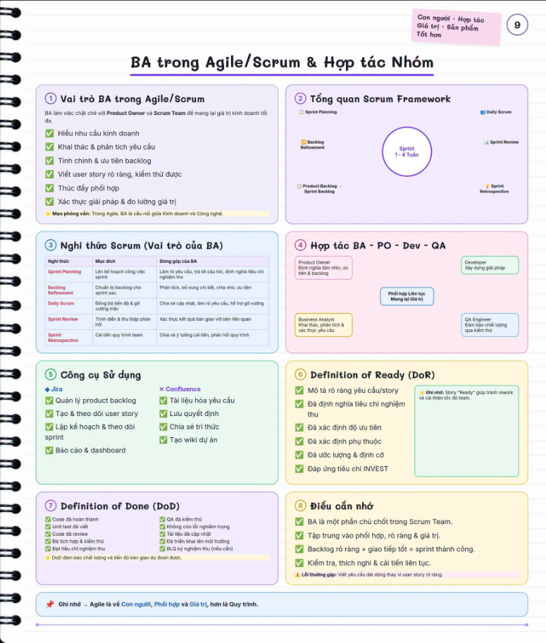
Ma Trận Truy Vết (RTM), Quản Lý Yêu Cầu Thay Đổi (CR) & Quản Trị Rủi Ro
Trace Forward & Backward · 5 Bước xử lý Change Request · Ngăn chặn Scope Creep · Ma trận Rủi ro
11.1. Ma Trận Truy Vết Yêu Cầu (Requirements Traceability Matrix - RTM)
RTM là chiếc bản đồ liên kết mọi thành phần trong dự án, đảm bảo không có yêu cầu nào bị bỏ rơi và không có dòng code nào thừa thãi:
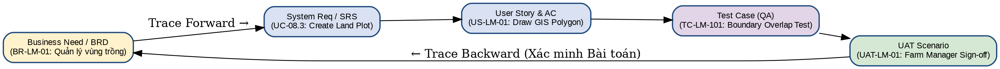
| Mã Yêu Cầu Kinh Doanh | Mô tả Yêu cầu Nghiệp vụ | Mã Use Case / SRS | Mã User Story | Mã Test Case (QA) | Mã Kịch bản UAT | Trạng thái |
|---|---|---|---|---|---|---|
| BR-LM-01 | Quản lý ranh giới lô đất minh bạch bằng bản đồ số GIS | UC-08.1, UC-08.3 | US-LM-01 | TC-LM-101, TC-LM-102 | UAT-LM-01 | ✓ Passed |
| BR-LOG-02 | Ghi nhật ký canh tác kèm bằng chứng hình ảnh hiện trường | UC-03.2 | US-LOG-04 | TC-LOG-201, TC-LOG-202 | UAT-LOG-03 | ✓ Passed |
| BR-TSK-07 | Kiểm tra tự động thời gian cách ly thuốc BVTV trước thu hoạch | UC-05.4 | US-TSK-08 | TC-TSK-305 | UAT-TSK-02 | ✓ Passed |
| BR-QR-01 | Sinh mã QR động truy xuất nguồn gốc công khai cho lô hàng | UC-11.1 | US-QR-01 | TC-QR-401, TC-QR-402 | UAT-QR-01 | ✓ Passed |
11.2. Quy Trình Xử Lý Yêu Cầu Thay Đổi (Change Request - CR) 5 Bước
Ghi nhận ai yêu cầu, ngày yêu cầu, mô tả thay đổi mong muốn vào Change Log thay vì từ chối ngay lập tức.
Đánh giá ảnh hưởng 4 chiều: Scope (phát sinh màn hình/API nào), Time (tốn thêm mấy ngày), Cost (tăng ngân sách bao nhiêu), Quality (rủi ro sinh bug mới).
BA cùng PM họp với Change Control Board (CCB) hoặc Khách hàng, đưa ra các lựa chọn và ảnh hưởng để họ quyết định Phê duyệt, Từ chối, hay Hoãn lại.
Nếu được duyệt: Cập nhật SRS, sửa User Story, cập nhật RTM, thông báo cho Dev và QA điều chỉnh Test Case.
11.3. Ngăn Chặn Phình Phạm Vi (Scope Creep)
Scope Creep là hiện tượng các yêu cầu nhỏ lẻ liên tục được nhồi nhét không chính thức làm dự án trễ hạn và vỡ ngân sách. BA kiểm soát bằng cách:
- 1. Làm rõ ranh giới Trong Phạm Vi (In-Scope) & Ngoài Phạm Vi (Out-of-Scope) ngay từ bản đặc tả đầu tiên có chữ ký khách hàng.
- 2. Luôn nói "Đồng ý, NHƯNG..." thay vì "Không được": "Tính năng này rất hay! Nhưng nếu thêm vào sprint này, team sẽ phải dời tính năng B sang sprint sau, hoặc chúng ta đưa vào Phase 2 nhé?"
- 3. Áp dụng cơ chế Swap (Đổi ngang): Muốn thêm 1 Story 5 điểm vào Sprint đang chạy thì phải rút 1 Story 5 điểm tương đương ra ngoài.
- 4. Duy trì Ma trận RTM minh bạch: Mọi thay đổi đều phải gắn mã ID và tính toán công sức rõ ràng.
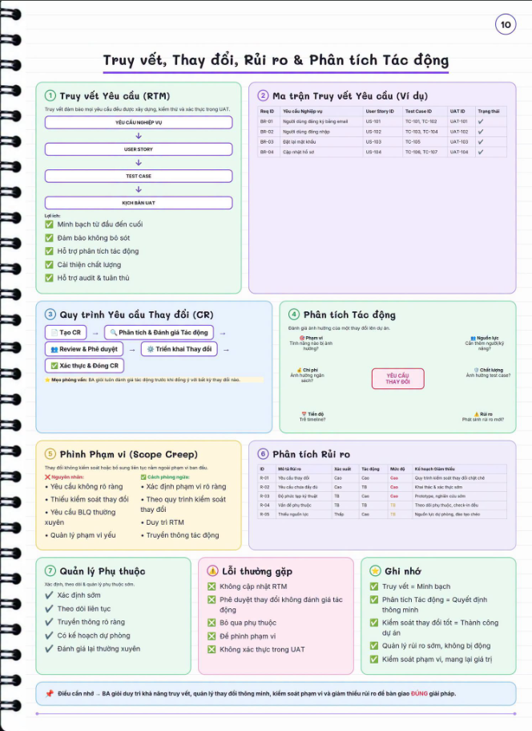
Dữ Liệu & Kỹ Thuật Cho BA: SQL Nâng Cao, Phân Tích Excel, UAT & KPI Dashboard
Truy vấn SQL thực chiến · Excel Pivot/XLOOKUP · Lập kế hoạch kiểm thử UAT · Xây dựng Dashboard đo lường
12.1. SQL Cho BA: Tự Chủ Trích Xuất & Kiểm Chứng Dữ Liệu
Một BA biết SQL không cần phải chờ đợi Dev viết API mà có thể trực tiếp truy vấn cơ sở dữ liệu để xác minh lỗi, đối soát số liệu báo cáo và tạo bảng mẫu:
-- Truy vấn Báo cáo Tổng hợp Sản lượng Thu hoạch theo Cây trồng và Lô đất trong EAPLS
SELECT
c.CropName AS TenCayTrong,
lp.Name AS TenVungTrong,
COUNT(hb.Id) AS SoLuongLoThuHoach,
ROUND(SUM(hb.Quantity), 2) AS TongSanLuong_Kg,
ROUND(AVG(hb.Quantity), 2) AS SanLuongTrungBinh_Kg
FROM HarvestBatches hb
INNER JOIN CultivationLogbooks cl ON hb.CultivationLogbookId = cl.Id
INNER JOIN Crops c ON cl.CropId = c.Id
INNER JOIN CultivationLogbookLandPlot clp ON cl.Id = clp.CultivationLogbooksId
INNER JOIN LandPlots lp ON clp.LandPlotsId = lp.Id
WHERE hb.IsDeleted = 0
AND cl.Status = 'Completed'
AND hb.HarvestDate >= '2026-01-01'
GROUP BY c.CropName, lp.Name
HAVING SUM(hb.Quantity) > 500
ORDER BY TongSanLuong_Kg DESC;
12.2. Kỹ Năng Excel Phân Tích Dành Cho BA
Tổng hợp nhanh hàng nghìn dòng giao dịch nông sản theo tháng, nhóm vật tư, hoặc theo từng tổ hợp tác mà không cần viết code.
Thay thế VLOOKUP cũ kỹ: tìm kiếm linh hoạt hai chiều, đối chiếu danh mục vật tư nguồn với mã vật tư đích trong quá trình Data Migration.
Mô phỏng kịch bản kinh doanh: Giả sử sản lượng bưởi tăng 15% và chi phí phân bón giảm 8% thì lợi nhuận ròng của trang trại thay đổi ra sao.
12.3. Tổ Chức Kiểm Thử Nghiệm Thu Người Dùng (UAT)
UAT (User Acceptance Testing) là bài kiểm tra cuối cùng trước khi Go-live, do chính người dùng nghiệp vụ (Business Users) thực hiện dưới sự hướng dẫn của BA:
- 1. Xác định Tiêu chí Nghiệm thu: Dựa trên Acceptance Criteria của SRS.
- 2. Xây dựng Kịch bản UAT (Scenarios): Viết theo ngôn ngữ nghiệp vụ hàng ngày của người dùng, không viết bằng thuật ngữ kỹ thuật.
- 3. Chuẩn bị Dữ liệu Test (Test Data): Nạp dữ liệu thực tế gần giống môi trường Production (danh mục đất, hạt giống, phân bón thật).
- 4. Tổ chức Buổi Kiểm thử (Test Execution): BA trực tiếp quan sát, ghi nhận khó khăn, thắc mắc và phân loại lỗi.
- 5. Theo dõi & Xử lý Defect: Phối hợp Dev sửa lỗi theo thứ tự ưu tiên (Blocker -> Critical -> Major -> Minor).
- 6. Ký Biên bản Nghiệm thu (Sign-off): Lãnh đạo trang trại ký xác nhận bàn giao chính thức.
Một hệ thống tốt phải đo lường được hiệu quả. Các chỉ số KPI trọng điểm được thiết lập trên Dashboard EAPLS:
- • Tỷ lệ hoàn thành công việc đúng hạn (On-time Task Rate): Đo lường hiệu suất canh tác của từng đội nhóm (Mục tiêu > 90%).
- • Thời gian duyệt báo cáo trung bình: Giảm từ 3 ngày xuống còn dưới 2 giờ làm việc.
- • Tỷ lệ phát hiện lỗi cách ly nông dược: 100% các vi phạm thời gian cách ly được hệ thống tự động cảnh báo và ngăn chặn.
- • Lượt quét mã QR nguồn gốc công khai: Đo lường mức độ quan tâm của người tiêu dùng đối với nông sản minh bạch.
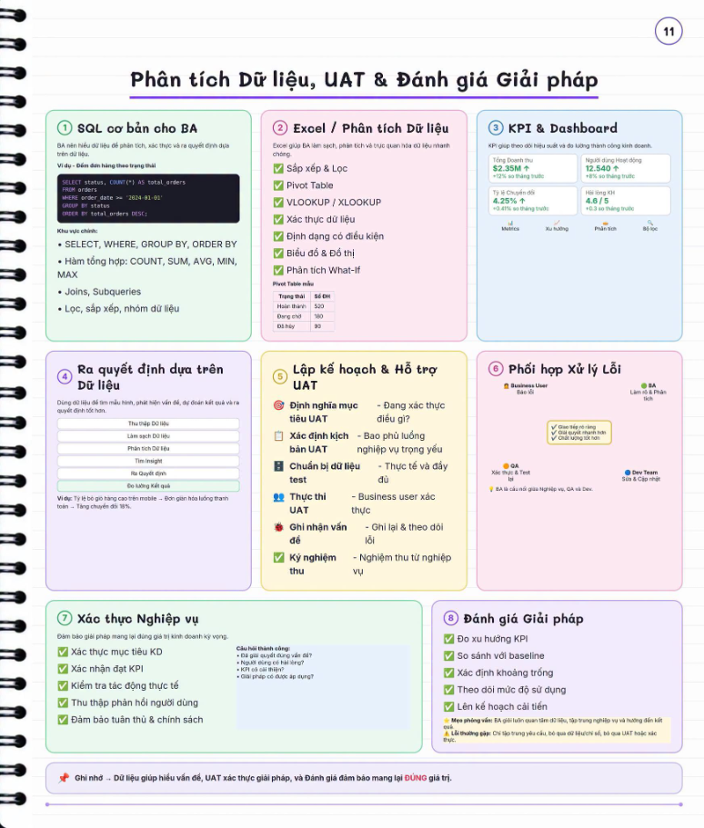
ERP & Microsoft Dynamics 365 Functional Consultant
Tư Duy ERP Cốt Lõi & Các Quy Trình Doanh Nghiệp Chuẩn Quốc Tế
Bản chất ERP · P2P, O2C, R2R, Kho bãi · Master Data vs Transaction Data · Thuật ngữ Tài chính kế toán
ERP (Enterprise Resource Planning) không phải là một tập hợp các form nhập liệu riêng lẻ, mà là một hệ thống thần kinh quản trị tích hợp toàn diện. Giá trị lớn nhất của ERP nằm ở việc dữ liệu và quy trình chảy thông suốt giữa các phòng ban: từ Bán hàng -> Kho vận -> Mua hàng -> Kế toán tài chính, loại bỏ hoàn toàn các ốc đảo dữ liệu (Data Silos) và sai lệch số liệu đối soát.
13.1. Năm Quy Trình Doanh Nghiệp Tiêu Chuẩn Trong Hệ Thống ERP
| Quy trình ERP | Luồng nghiệp vụ mức cao | Phòng ban liên quan | Điểm kiểm soát cốt lõi mà BA cần làm rõ |
|---|---|---|---|
| Procure-to-Pay (P2P) Mua hàng đến Thanh toán |
Yêu cầu mua hàng (Purchase Requisition) -> Phê duyệt -> Đơn mua hàng (PO) -> Nhận hàng (Goods Receipt) -> Hóa đơn nhà cung cấp (Vendor Invoice) -> Thanh toán (Payment). | Phòng Mua hàng, Bộ phận Kho, Kế toán Phải trả (AP) | 3-Way Matching (Đối chiếu 3 bên): Số lượng và đơn giá trên Purchase Order, Goods Receipt Note và Vendor Invoice có khớp nhau không? Ai có thẩm quyền duyệt thanh toán? |
| Order-to-Cash (O2C) Bán hàng đến Thu tiền |
Báo giá (Sales Quote) -> Đơn bán hàng (Sales Order) -> Kiểm tra hạn mức công nợ -> Xuất kho & Giao hàng (Delivery) -> Xuất hóa đơn (Invoice) -> Thu tiền khách hàng -> Đối soát. | Phòng Kinh doanh, Quản lý Kho, Kế toán Phải thu (AR) | Hạn mức tín dụng khách hàng (Credit Limit)? Chính sách chiết khấu (Discount Policy)? Điều khoản giao hàng (Incoterms)? Thời hạn nợ và ghi nhận doanh thu khi nào? |
| Record-to-Report (R2R) Ghi sổ đến Báo cáo tài chính |
Giao dịch kinh tế phát sinh -> Bút toán nhật ký (Journal Entry) -> Định khoản Sổ cái (General Ledger) -> Khóa sổ cuối kỳ (Period Close) -> Lập Báo cáo tài chính (P&L, Balance Sheet, Cash Flow). | Phòng Kế toán tổng hợp, Giám đốc Tài chính (CFO) | Hệ thống Tài khoản (Chart of Accounts)? Các bút toán điều chỉnh cuối kỳ? Quy trình khóa sổ hàng tháng/quý diễn ra trong bao lâu? Tuân thủ chuẩn mực kế toán VAS hay IFRS? |
| Inventory Management Quản trị Kho & Tồn kho |
Nhập kho (Receipt) -> Xếp vị trí (Put-away) -> Điều chuyển nội bộ (Transfer) -> Soạn hàng & Đóng gói (Pick & Pack) -> Kiểm kê & Điều chỉnh (Stock Count & Adjustment). | Thủ kho, Bộ phận Logistics, Đội Vận hành | Phương pháp tính giá vốn tồn kho (FIFO, Bình quân gia quyền)? Quản lý theo Số lô (Batch/Lot) hay Số Serial? Quy tắc chặn xuất âm kho (Negative inventory)? Cảnh báo tồn kho an toàn. |
| Production / Manufacturing Sản xuất & Chế biến |
Dự báo nhu cầu -> Lập kế hoạch NVL (MRP) -> Lệnh sản xuất (Production Order) -> Xuất kho NVL -> Ghi nhận sản lượng & Giờ công -> Nhập kho thành phẩm -> Tính giá thành. | Phòng Kế hoạch, Quản đốc phân xưởng, Kế toán Chi phí | Định mức nguyên vật liệu (BOM - Bill of Materials)? Công đoạn sản xuất (Routing)? Tỷ lệ hao hụt cho phép? Kiểm tra chất lượng (QC inspection) trước khi nhập kho thành phẩm. |
13.2. Phân Biệt Master Data (Dữ Liệu Nền) vs. Transaction Data (Dữ Liệu Giao Dịch)
Là dữ liệu tĩnh hoặc ít biến động theo thời gian, được dùng lặp đi lặp lại trong mọi giao dịch kinh doanh. Là xương sống của hệ thống ERP.
- • Ví dụ trong ERP: Danh mục Khách hàng (Customers), Nhà cung cấp (Vendors), Vật tư/Sản phẩm (Items), Hệ thống tài khoản (Chart of Accounts), Danh mục Kho (Warehouses).
- • Ví dụ trong EAPLS: Danh mục Cây trồng (Crops), Danh mục Lô đất (LandPlots), Danh mục Vật tư/Phân bón (Materials), Danh mục Người dùng (Users).
- • Tầm quan trọng: Nếu Master Data bị sai (ví dụ: sai mã số thuế, sai đơn vị tính kg thành tấn, sai mã vùng trồng) thì toàn bộ các giao dịch phát sinh sau đó đều sai theo dây chuyền!
Là dữ liệu động ghi nhận từng sự kiện kinh tế diễn ra hàng ngày, luôn gắn liền với thời gian (Timestamp) và tham chiếu đến Master Data.
- • Ví dụ trong ERP: Đơn đặt hàng (Sales Orders), Đơn mua hàng (Purchase Orders), Phiếu xuất kho, Hóa đơn tài chính, Giao dịch thanh toán ngân hàng.
- • Ví dụ trong EAPLS: Nhật ký bón phân hàng ngày (Daily Logs), Báo cáo hoàn thành công việc (Task Reports), Lô thu hoạch (Harvest Batches), Lịch sử quét mã QR.
- • Tầm quan trọng: Khối lượng dữ liệu giao dịch tăng trưởng cực nhanh hàng ngày, đòi hỏi thiết kế cơ sở dữ liệu tối ưu đánh index và phân vùng (Partitioning).
13.3. Bảng Thuật Ngữ Tài Chính Kế Toán Nhập Môn Cho Functional Consultant
| Thuật ngữ Tiếng Anh | Tên Tiếng Việt | Giải thích ngắn gọn, dễ nhớ | Ý nghĩa trong hệ thống Microsoft Dynamics 365 |
|---|---|---|---|
| General Ledger (GL) | Sổ Cái Chung | Nơi tập hợp toàn bộ các bút toán nợ/có ghi nhận hoạt động tài chính của doanh nghiệp. | Mọi giao dịch mua bán, kho vận sau khi Post đều tự động tạo ra GL Entries. |
| Accounts Payable (AP) | Khoản Phải Trả Nhà Cung Cấp | Số tiền doanh nghiệp đang nợ các nhà cung cấp vật tư, dịch vụ chưa thanh toán. | Quản lý Vendor Ledger Entries, theo dõi hạn nợ (Due Date) và lịch thanh toán. |
| Accounts Receivable (AR) | Khoản Phải Thu Khách Hàng | Số tiền khách hàng mua hàng nhưng chưa trả tiền cho doanh nghiệp. | Quản lý Customer Ledger Entries, hạn mức công nợ (Credit Limit) và tuổi nợ (Aging Report). |
| 3-Way Matching | Đối Chiếu Ba Chiều | Nguyên tắc kiểm soát nội bộ: Khớp thông tin giữa PO (Mua) + Goods Receipt (Kho) + Invoice (Hóa đơn). | D365 tự động kiểm tra số lượng và giá trị, nếu lệch vượt quá ngưỡng tolerance sẽ chặn thanh toán. |
| Bank Reconciliation | Đối Soát Số Dư Ngân Hàng | So sánh số liệu sổ sách kế toán nội bộ với sổ phụ (Bank Statement) của ngân hàng để tìm chênh lệch. | Tính năng import file điện tử sổ phụ ngân hàng và tự động gán khớp giao dịch (Auto-match). |
| Cutover | Chuyển Đổi Vận Hành | Thời điểm quan trọng chuyển toàn bộ dữ liệu và dừng hệ thống cũ để bắt đầu chạy trên hệ thống mới. | Kế hoạch Cutover chi tiết từng giờ: chốt sổ cũ, import số dư đầu kỳ, phân quyền và mở cổng Go-live. |
Vai Trò Functional Consultant Tại NaviWorld & Phương Pháp Fit/Gap Analysis
Quy trình triển khai ERP · Kỹ thuật Fit/Gap Analysis · Configuration vs Customization · Data Migration · Đối chiếu JD
14.1. Vị Trí Functional Consultant Khác Gì IT BA Truyền Thống?
Trong khi IT BA truyền thống thường tham gia phát triển phần mềm may đo từ đầu (Custom Software from scratch), thì Functional Consultant làm việc trên các nền tảng ERP đóng gói sẵn có tầm vóc toàn cầu như Microsoft Dynamics 365 Business Central / Finance & Operations:
• Bắt đầu từ trang giấy trắng (Empty canvas).
• Khách hàng muốn gì thì thiết kế và dev viết code từ database, API đến giao diện.
• Thời gian xây dựng tính bằng năm, rủi ro dự án cao.
• Bắt đầu từ nền tảng ERP chuẩn đã có sẵn Best Practices quốc tế.
• Nhiệm vụ trọng tâm: Tư vấn hướng khách hàng điều chỉnh quy trình theo chuẩn ERP thay vì cắm đầu viết code mới.
• Thực hiện Fit/Gap Analysis, cấu hình hệ thống (Configuration), đào tạo người dùng và hỗ trợ Go-live.
14.2. Phương Pháp Luận Phân Tích Fit/Gap (Fit/Gap Analysis Framework)
• FIT (Phù hợp): Chức năng chuẩn sẵn có (Standard Features) của Dynamics 365 đáp ứng được yêu cầu của khách hàng thông qua thiết lập cấu hình tham số.
• GAP (Khoảng trống): Tính năng chuẩn của hệ thống chưa đáp ứng trọn vẹn yêu cầu nghiệp vụ đặc thù của doanh nghiệp.
| Bước phân tích | Câu hỏi cốt lõi của Consultant | Ví dụ thực tế trong dự án triển khai |
|---|---|---|
| 1. Understand (Hiểu nhu cầu) | Mục tiêu kinh doanh thực sự của khách hàng là gì? Tại sao họ cần luồng này? | Trưởng phòng Mua hàng muốn mọi Đơn mua hàng (PO) trên 500 triệu đồng phải có chữ ký số của Tổng Giám đốc trước khi gửi nhà cung cấp. |
| 2. Map Standard (Ánh xạ chuẩn) | Tính năng Workflow Approval tiêu chuẩn trong Dynamics 365 có sẵn những gì? | Kiểm tra module Approval Workflows trong D365: Hệ thống hỗ trợ sẵn duyệt phân cấp theo giá trị đơn hàng và gửi email thông báo. |
| 3. Identify Gap (Xác định khoảng trống) | Điểm nào tính năng chuẩn chưa làm được? | D365 chuẩn chỉ hỗ trợ duyệt bằng tài khoản đăng nhập trên app, chưa tích hợp cổng Chữ ký số Viettel/VNPT CA theo luật giao dịch điện tử Việt Nam. |
| 4. Evaluate Options (Đánh giá giải pháp) | Có những phương án nào để lấp đầy khoảng trống này? |
• Phương án A (Quy trình): Khách hàng chấp nhận phê duyệt trực tiếp trên D365 Mobile App. • Phương án B (Low-code): Dùng Microsoft Power Automate kết nối API Chữ ký số. • Phương án C (Custom code): Lập trình viết Extension riêng trên Visual Studio AL. |
| 5. Decide & Approve (Quyết định) | Phương án nào tối ưu nhất về chi phí, tiến độ và khả năng nâng cấp sau này? | Thống nhất chọn Phương án B (Power Automate) vì triển khai nhanh trong 3 ngày, chi phí thấp và không can thiệp vào mã nguồn gốc của ERP. |
| 6. Document (Lập tài liệu) | Tài liệu hóa quyết định vào đâu? | Ghi nhận vào Fit/Gap Register, viết Functional Design Document (FDD) bàn giao cho đội kỹ thuật. |
14.3. Nguyên Tắc: Khi Nào Nên Configuration? Khi Nào Nên Customization?
• Sử dụng các thiết lập có sẵn: Bật/tắt tham số, thêm trường dữ liệu động, thiết lập ma trận phân quyền RBAC, cài đặt quy tắc duyệt Workflow.
• Lợi ích: Hoàn toàn miễn phí chi phí code, hệ thống ổn định tuyệt đối và không bao giờ bị lỗi khi Microsoft tự động cập nhật phiên bản mới (Wave updates).
• Chỉ thực hiện khi yêu cầu nghiệp vụ là Lợi thế Cạnh tranh Cốt lõi (Core Competitive Advantage) hoặc bắt buộc theo luật pháp Việt Nam (ví dụ: Thông tư 200 kế toán).
• Hậu quả: Tốn kém ngân sách lập trình, kéo dài tiến độ kiểm thử và có thể gây xung đột khi nâng cấp hệ thống định kỳ.
14.4. Quy Trình Di Chuyển Dữ Liệu (Data Migration) 7 Bước Chuẩn Quốc Tế
Di chuyển dữ liệu cũ từ Excel hoặc phần mềm cũ vào ERP mới là một trong những phần việc gian nan nhất của Functional Consultant:
Khảo sát hiện trạng dữ liệu cũ: Có bao nhiêu dòng? Bao nhiêu trường bị trống? Định dạng ngày tháng, số thập phân ra sao?
Làm sạch dữ liệu: Xóa các bản ghi rác, khách hàng trùng lặp, chuẩn hóa mã số thuế và thống nhất đơn vị đo lường.
Lập bảng ánh xạ: Trường [Tên_KH] ở file Excel cũ sẽ tương ứng với trường [Customer Name] nào trong bảng D365.
Chuyển đổi dữ liệu theo đúng khuôn mẫu template Excel / XML của công cụ Microsoft Data Migration Framework.
Nạp thử nghiệm dữ liệu lên môi trường Test để đo thời gian tải và bắt mọi lỗi validation phát sinh.
Đối soát số liệu: Tổng số dư công nợ và tổng số lượng tồn kho trên ERP mới phải khớp 100% từng đồng với hệ thống cũ trước khi Cutover.
14.5. Phân Tích Đối Chiếu Trực Tiếp Với Yêu Cầu Tuyển Dụng (JD) NaviWorld
Yêu cầu JD NaviWorld: Tìm kiếm ứng viên có tư duy logic tốt, khả năng phân tích quy trình nghiệp vụ, giao tiếp tiếng Anh tốt, tinh thần học hỏi nhanh để đào tạo thành Functional Consultant chuyên sâu về Microsoft Dynamics 365.
Lợi thế cạnh tranh vượt trội của Đoàn Vĩnh Hưng:
- ✓ Nền tảng Kỹ thuật Phần mềm (Software Engineering & Frontend): Hiểu sâu sắc về cấu trúc Database, API RESTful, vòng đời SDLC, thuật toán và cách Dev tư duy -> Không bị ngợp trước các kiến trúc phức tạp của Dynamics 365 và Power Platform.
- ✓ Kinh nghiệm Quản trị và Phân tích trong Đồ án Thực tế (EAPLS): Đã trực tiếp đóng vai trò Team Leader & Solution Design, tự tay viết SRS, vẽ Flowchart, Use Case, Activity Swimlane, DFD Mức 0/1, ERD và tổ chức 41 kịch bản kiểm thử UAT.
- ✓ Tư duy Trung thực & Thái độ Học tập Cởi mở: Tự tin trình bày những gì đã làm thật trong đồ án, sẵn sàng thừa nhận những mảng chuyên sâu về Dynamics 365 đang tích cực học hỏi và cam kết phát triển gắn bó lâu dài cùng NaviWorld.
Khai Thác Toàn Diện Đồ Án Tốt Nghiệp EAPLS
Bức Tranh Toàn Cảnh Dự Án EAPLS: Vấn Đề Nông Nghiệp & 12 Phân Hệ Cốt Lõi
Hệ thống Nhật ký Sản xuất Nông sản Điện tử · Đồ án tốt nghiệp xuất sắc FPTU SEP490_G30 · Kiến trúc công nghệ
• Tên dự án: Electronic Agricultural Production Logbook System (EAPLS - SEP490_G30).
• Đơn vị: Đại học FPT Hà Nội (Kỳ tốt nghiệp Tháng 8/2026).
• Vai trò của Đoàn Vĩnh Hưng: Team Leader & Solution Design (Phụ trách khảo sát nghiệp vụ, phân rã WBS, thiết kế kiến trúc SRS, mô hình hóa quy trình, thiết kế cơ sở dữ liệu ERD và phối hợp kiểm thử UAT).
• Mục tiêu: Số hóa toàn bộ chuỗi ghi chép nhật ký nông sản, loại bỏ 100% sổ tay giấy truyền thống, bảo đảm kiểm soát dư lượng hóa chất và cung cấp cổng tra cứu nguồn gốc minh bạch bằng mã QR cho người tiêu dùng.
15.1. Mười Hai Phân Hệ Chức Năng (FE-01 Đến FE-12) Của EAPLS
Đăng nhập bảo mật JWT Token, xác thực OTP qua Email, phân quyền nghiêm ngặt 4 vai trò người dùng.
Lưu trữ thông tin giống cây, các giai đoạn sinh trưởng chuẩn, mùa vụ và điều kiện khí hậu phù hợp.
Thiết lập Process Template chuẩn VietGAP: các giai đoạn, công việc mẫu, danh mục vật tư khuyên dùng.
Khởi tạo Cultivation Plan, gán giống cây, liên kết lô đất và chỉ định Giám sát viên phụ trách.
Tích hợp bản đồ Leaflet/OpenStreetMap, vẽ Polygon ranh giới lô đất, tự tính m2, chống chồng lấn đất.
Giám sát viên giao Task cho Nông dân ngoài đồng kèm hạn hoàn thành (Deadline) và hướng dẫn vật tư.
Nông dân ghi nhận công việc thực tế, chụp ảnh đính kèm lưu Cloudinary, ghi lượng phân bón sử dụng.
Tự động kiểm tra thời gian cách ly nông dược (Quarantine Period), Giám sát viên duyệt hoặc từ chối sửa lại.
Theo dõi xuất/nhập/tồn phân bón, thuốc bảo vệ thực vật, tự động trừ kho khi Task hoàn thành.
Đóng gói sản lượng sau khi mùa vụ kết thúc, ghi nhận ngày thu hoạch, khối lượng kg và chất lượng.
Sinh mã QR động kèm TraceCode độc bản, cổng Public tra cứu trọn vẹn nhật ký canh tác chuẩn VietGAP.
Biểu đồ trực quan sản lượng, tỷ lệ hoàn thành task, cảnh báo tồn kho thấp và tích hợp dự báo thời tiết live.
15.2. Kiến Trúc Kỹ Thuật Hệ Thống (Clean Architecture)
Hệ thống được xây dựng theo mô hình phân tầng chuẩn mực Clean Architecture: Tách biệt rõ Domain Layer (Business Entities & Core Rules), Application Layer (Use Cases & DTOs), Infrastructure Layer (EF Core, MySQL 8.0, Cloudinary, Open-Meteo API) và Presentation Layer (ASP.NET Core Web API & React Frontend). Nhờ nắm vững kiến trúc này, BA Đoàn Vĩnh Hưng luôn viết đặc tả Use Case bám sát cấu trúc dữ liệu và API endpoints, giúp đội ngũ Dev tiết kiệm 40% thời gian trao đổi kỹ thuật.
Stakeholders & 5 Quy Tắc Nghiệp Vụ (Business Rules) Sống Còn Trong EAPLS
Quy tắc kiểm tra ranh giới GIS Polygon · Quy tắc cách ly an toàn nông dược · Cơ chế bảo mật truy xuất mã QR
16.1. Bảng 5 Quy Tắc Nghiệp Vụ (Business Rules) Tiêu Biểu Từ SRS EAPLS
| Mã Rule | Tên Quy Tắc Nghiệp Vụ | Điều kiện Kích hoạt & Ràng buộc Logic | Hành vi Xử lý Của Hệ thống |
|---|---|---|---|
| BR-LM-01 | Ràng buộc Không Chồng Lấn Ranh Giới Đất GIS (Non-overlapping Boundary) | Khi Farm Manager tạo mới hoặc chỉnh sửa tọa độ hình đa giác (Polygon) của một Lô đất (LandPlot). | Hệ thống gọi thuật toán kiểm tra giao cắt không gian (Spatial Intersection Check). Nếu Polygon mới cắt hoặc chứa một phần bất kỳ lô đất active nào khác -> Ngăn chặn lưu và báo lỗi MSG-LM-25. |
| BR-TSK-07 | Kiểm Tra Hạn Cách Ly Nông Dược (Pesticide Quarantine Period) | Khi Nông dân hoặc Giám sát viên tạo Báo cáo Hoàn thành Công việc (Task Summary) cho một Task thuộc nhóm "Thu hoạch" (Harvesting). | Hệ thống tự động quét lịch sử các Task phun thuốc trừ sâu trên cùng lô đất đó. Tính số ngày từ lần phun cuối cùng: Số_Ngày = Ngày_Hiện_Tại - Ngày_Phun_Cuối. Nếu Số_Ngày < QuarantineDays (ghi trong danh mục thuốc) -> Disable nút submit, báo lỗi MSG-TSK-18 kèm số ngày còn phải chờ. |
| BR-QR-01 | Điều Kiện Kích Hoạt Sinh Mã QR Truy Xuất Nguồn Gốc | Khi Farm Manager yêu cầu tạo Lô Thu hoạch (HarvestBatch) và in tem mã QR truy xuất. | Chỉ cho phép sinh mã QR khi Nhật ký Canh tác (CultivationLogbook) tương ứng đã ở trạng thái Status = 'Completed' và toàn bộ các Task bắt buộc đã được Giám sát viên phê duyệt hoàn tất (100% Approved). |
| BR-QR-02 | Bảo Mật Thông Tin & Lọc Dữ Liệu Trang Public QR | Khi người tiêu dùng hoặc đối tác quét mã QR để tra cứu thông tin sản phẩm trên Internet. | API Public chỉ trả về các bản ghi Nhật ký đã qua phê duyệt (Approved). Các bản ghi nháp hoặc bị từ chối sẽ bị ẩn hoàn toàn. Ngoài ra, Farm Manager có quyền cấu hình ẩn/hiện giá thành vật tư hoặc hình ảnh nội bộ. |
| BR-MAT-04 | Tự Động Trừ Tồn Kho Vật Tư & Cảnh Báo Ngưỡng An Toàn | Khi Giám sát viên bấm Phê duyệt (Approve) Báo cáo Công việc có ghi nhận sử dụng phân bón/nông dược. | Hệ thống tự động tạo giao dịch xuất kho và trừ số lượng trong bảng Materials. Nếu số tồn khả dụng giảm xuống dưới mức MinimumStock, hệ thống tự động bắn Notification cảnh báo mua hàng cho Farm Manager. |
16.2. Phân Tích Sâu Một Business Rule: Quy Tắc Cách Ly Nông Dược (BR-TSK-07)
Quy tắc này thể hiện tư duy vượt bậc của BA: Không chỉ nghe người dùng bảo "cần tính năng thu hoạch" rồi cho người ta bấm nút, mà BA đã chủ động đào sâu tiêu chuẩn an toàn thực phẩm VietGAP để lồng ghép logic kiểm soát rủi ro sống còn cho doanh nghiệp:
- • Vấn đề thực tế: Nông dân thấy thương lái ép giá thu mua sớm nên vội vã hái quả dù mới phun thuốc diệt rầy được 3 ngày (trong khi hạn cách ly của thuốc là 14 ngày). Nếu bán ra thị trường sẽ gây ngộ độc và mất uy tín toàn bộ thương hiệu.
- • Giải pháp của BA: Thêm trường
QuarantineDays (int)vào bảng Master Data Vật tư. Trong màn hình Submit Báo cáo Thu hoạch, hệ thống chạy câu lệnh kiểm tra logic: Nếu vi phạm, màn hình tô cảnh báo màu vàng cam và thông báo: "Cảnh báo: Lô đất vừa phun thuốc Amistar Top ngày 10/05/2026 (Hạn cách ly 14 ngày). Bạn phải chờ thêm 4 ngày nữa (đến ngày 24/05/2026) mới được phép tạo báo cáo thu hoạch!". - • Góc nhìn nhà tuyển dụng NaviWorld: Đây chính là phẩm chất cốt lõi của một Functional Consultant: Hiểu quy định pháp lý, nắm chắc quy trình và thiết kế giải pháp kiểm soát nội bộ chặt chẽ (Internal Controls)!
Trình Diễn Bộ Tài Liệu BA Thực Tế: Use Case Spec, ERD, RTM & Kết Quả UAT
Mẫu đặc tả Use Case Specification chuẩn IEEE · Cơ sở dữ liệu MySQL · Bảng RTM mini · Số liệu kiểm thử 100% Pass
17.1. Mẫu Đặc Tả Use Case Specification Chuẩn: UC-08.3 (Tạo Nhật Ký Canh Tác Mới)
| Mục đặc tả | Nội dung chi tiết trong tài liệu SRS EAPLS |
|---|---|
| Use Case ID & Name | UC-08.3: Tạo Kế Hoạch & Nhật Ký Canh Tác Mới (Create Cultivation Logbook) |
| Primary Actor | Trưởng Trang Trại (Farm Manager) |
| Brief Description | Cho phép Farm Manager khởi tạo một mùa vụ canh tác mới trên một hoặc nhiều lô đất, gán loại cây trồng, chọn quy trình mẫu chuẩn và phân công Giám sát viên phụ trách. |
| Preconditions (Tiền điều kiện) |
1. Farm Manager đã đăng nhập thành công vào hệ thống EAPLS. 2. Đã có ít nhất 1 Cây trồng và 1 Quy trình mẫu đang active trong hệ thống. 3. Lô đất dự định canh tác đang ở trạng thái "Khả dụng" (Available), không bị gắn với mùa vụ khác đang chạy. |
| Main Success Scenario (Luồng chính) |
1. Farm Manager truy cập màn hình "Quản lý Nhật Ký Canh Tác" và nhấn nút "Tạo Mùa Vụ Mới". 2. Hệ thống hiển thị form nhập liệu: Tên mùa vụ, Ngày bắt đầu, Ngày dự kiến kết thúc, Dropdown Cây trồng. 3. Farm Manager chọn Cây trồng -> Hệ thống tự động nạp danh sách các Quy trình Mẫu (Process Templates) tương ứng. 4. Farm Manager chọn Quy trình Mẫu và tích chọn Lô đất canh tác từ danh sách lô đất khả dụng. 5. Farm Manager chọn Giám sát viên (Farm Supervisor) phụ trách từ danh sách nhân viên. 6. Farm Manager nhấn nút "Lưu Kế Hoạch". 7. Hệ thống kiểm tra hợp lệ dữ liệu, tự động sinh các Giai đoạn (Stages) và Công việc (Tasks) theo mẫu quy trình, đổi trạng thái lô đất sang "In-Use", lưu bản ghi vào Database với trạng thái Status = 'Planned' và gửi Email thông báo cho Giám sát viên.
|
| Alternative Flows (Luồng nhánh) | 3a. Không sử dụng Quy trình mẫu: Farm Manager có thể chọn "Tự tạo quy trình tùy chỉnh" -> Hệ thống mở giao diện cho phép tự thêm từng giai đoạn và công việc thủ công. |
| Exception Flows (Ngoại lệ) |
6a. Lô đất bị xung đột thời gian: Nếu lô đất đã bị người quản lý khác chọn trong lúc đang thao tác -> Hệ thống hiển thị cảnh báo lỗi MSG-LM-30: "Lô đất [Tên] vừa được gán vào mùa vụ khác. Vui lòng chọn lô đất khác!" và giữ nguyên dữ liệu đã nhập trên form.6b. Ngày kết thúc trước ngày bắt đầu: Hệ thống hiển thị thông báo lỗi validation tại trường ngày tháng và không cho phép submit. |
| Postconditions (Hậu điều kiện) | Một bản ghi mới được tạo trong bảng CultivationLogbooks; các task con được tạo trong CultivationTasks; thông báo được đẩy tới ứng dụng của Giám sát viên. |
17.2. Kết Quả Kiểm Thử Phần Mềm Đạt Chuẩn (Software Testing Metrics)
Bao phủ trọn vẹn 10 hàm nghiệp vụ tính toán diện tích và kiểm tra logic cách ly.
Kiểm thử tích hợp API endpoints, Database Transactions và kết nối Cloudinary/Open-Meteo.
Được nghiệm thu thực tế và ký duyệt bởi Trưởng trại và Giám sát viên nông nghiệp.
Kịch Bản Thuyết Trình Đồ Án EAPLS 90 Giây & Bộ 10 Câu Hỏi Đào Sâu
Elevator pitch 90s mở màn ấn tượng · Định vị vai trò cá nhân trung thực · Bộ câu hỏi kỹ thuật chuyên sâu
18.1. Bài Thuyết Trình Giới Thiệu Dự Án EAPLS Trong 90 Giây (Elevator Pitch)
"Dạ thưa anh/chị, dự án tâm đắc nhất trong quá trình học tập tại Đại học FPT của em là EAPLS - Hệ thống Nhật ký Sản xuất Nông sản Điện tử. Dự án xuất phát từ một bài toán kinh doanh rất thực tế tại Việt Nam: Hơn 85% các hợp tác xã hiện nay vẫn ghi chép canh tác bằng sổ tay giấy thủ công, dẫn đến tình trạng số liệu bị thất lạc, mất 3-5 ngày để tổng hợp báo cáo mùa vụ và không thể chứng minh nguồn gốc nông sản an toàn khi xuất khẩu sang các thị trường khó tính như EU hay Nhật Bản.
Trong dự án này, em đảm nhận vai trò Team Leader & Solution Design điều phối nhóm 5 thành viên. Nhiệm vụ chính của em là làm việc trực tiếp với các chuyên gia nông nghiệp để khai thác bài toán, phân rã 12 phân hệ chức năng, xây dựng toàn bộ tài liệu đặc tả SRS, mô hình hóa quy trình nghiệp vụ bằng Flowchart, Activity Diagram Swimlane và thiết kế mô hình dữ liệu ERD chuẩn hóa trên MySQL.
Điểm nhấn giải pháp mà em trực tiếp đề xuất là tích hợp bản đồ số GIS Polygon để giải quyết triệt để bài toán tranh chấp ranh giới đất nông nghiệp, và thiết lập Business Rule tự động kiểm tra thời gian cách ly thuốc trừ sâu trước khi cho phép thu hoạch. Kết quả là hệ thống đã hoàn thành đúng hạn 14 tuần, vượt qua 41 kịch bản kiểm thử UAT với tỷ lệ Pass 100%. Trải nghiệm thực chiến này giúp em rèn luyện tư duy phân tích sắc bén và khả năng kết nối nhịp nhàng giữa kinh doanh và công nghệ – những phẩm chất mà em tin là nền tảng vững chắc để phát triển thành một Functional Consultant tại NaviWorld ạ."
18.2. Bộ 10 Câu Hỏi Phỏng Vấn Đào Sâu Riêng Biệt Về Đồ Án EAPLS
MSG-LM-25.
CultivationDailyLogs có các trường CreatedAt, CreatedBy và ApprovedAt được gán cứng theo thời gian của máy chủ (Server UTC Timestamp), không cho phép client tự gửi ngày giờ lên. Mọi thao tác chỉnh sửa sau khi đã duyệt đều bị hệ thống khóa chặt; nếu bắt buộc phải điều chỉnh, hệ thống sẽ sinh ra một bản ghi bù trừ có ghi rõ lý do và chữ ký của Trưởng trại.
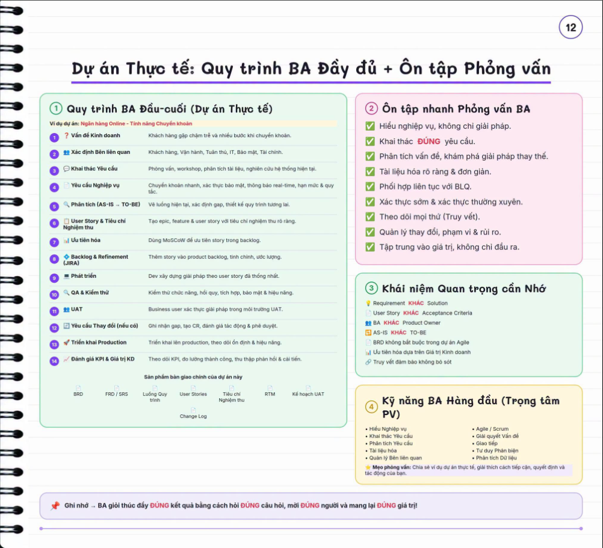
Bộ Kịch Bản Phỏng Vấn STAR, Tiếng Anh & Cẩm Nang Ôn Tập
Bộ 6 Kịch Bản Trả Lời Phỏng Vấn Bằng Phương Pháp STAR Chuyên Sâu
Phương pháp STAR (Situation, Task, Action, Result) · Tình huống thực chiến từ dự án EAPLS · Thể hiện năng lực giải quyết vấn đề
• Situation (Tình huống): Mô tả ngắn gọn bối cảnh và vấn đề kinh doanh thực tế (Chiếm 15% thời lượng).
• Task (Nhiệm vụ): Mục tiêu và trách nhiệm cụ thể của cá nhân bạn cần phải đạt được (Chiếm 15%).
• Action (Hành động): Các bước hành động chi tiết bạn đã chủ động thực hiện, các kỹ thuật phân tích đã dùng (Chiếm 50% - Trọng tâm ghi điểm!).
• Result (Kết quả): Kết quả đo lường được bằng số liệu cụ thể và bài học kinh nghiệm rút ra (Chiếm 20%).
- S (Situation): Em tốt nghiệp ngành Kỹ thuật Phần mềm Đại học FPT. Dự án em tâm đắc nhất là "Hệ thống Nhật ký Sản xuất Nông sản Điện tử (EAPLS)". Dự án xuất phát từ thực trạng hơn 85% hợp tác xã Việt Nam quản lý canh tác bằng sổ tay giấy, dữ liệu phân tán, không thể chứng minh nguồn gốc để xuất khẩu nông sản sang EU hay Nhật Bản.
- T (Task): Em đảm nhận vai trò Team Leader & Solution Design điều phối nhóm 5 người. Nhiệm vụ chính là làm việc với chuyên gia nông nghiệp để khai thác bài toán, phân rã 12 phân hệ chức năng, viết toàn bộ tài liệu đặc tả SRS, mô hình hóa quy trình và thiết kế ERD MySQL.
- A (Action): Em đã tổ chức các buổi workshop lấy yêu cầu, phân tích khoảng cách GAP AS-IS vs TO-BE. Trực tiếp đề xuất giải pháp tích hợp bản đồ GIS đa giác (Polygon) trên nền Leaflet để giải quyết tranh chấp đất đai, thiết kế cơ chế sinh mã QR động bảo mật và áp dụng mô hình Scrum lặp 3 Sprint để quản lý backlog chặt chẽ.
- R (Result): Dự án hoàn thành xuất sắc đúng hạn 14 tuần, vượt qua 478 Unit Tests, 223 Integration Tests và 41 kịch bản kiểm thử UAT với tỷ lệ Pass 100%. Đồ án được hội đồng đánh giá cao về tính khả thi thực tiễn trong chuyển đổi số nông nghiệp.
- S (Situation): Đất canh tác nông nghiệp có hình thù rất ngoằn ngoèo, không vuông vức. Ban đầu người dùng chỉ nhập diện tích m2 thủ công bằng số, dẫn đến việc không biết vị trí lô đất ở đâu trên thực tế và thường xuyên tranh chấp ranh giới.
- T (Task): Em phải tìm một giải pháp cho phép người dùng khoanh vùng lô đất trực quan trên bản đồ vệ tinh, tự động tính diện tích m2 chuẩn xác và bắt buộc phải ngăn chặn việc hai thửa đất vẽ đè lên nhau.
- A (Action): Em đã nghiên cứu và tích hợp OpenStreetMap/Leaflet. Em đặc tả lưu trữ ranh giới dưới dạng chuỗi JSON tọa độ đỉnh đa giác (
BoundaryJson). Ở phía Backend, em thiết lập Business RuleBR-LM-01: khi Farm Manager bấm lưu, hệ thống chạy thuật toán Spatial Intersection Check. Nếu đa giác mới giao cắt với bất kỳ thửa đất nào đang hoạt động, hệ thống lập tức chặn lưu, tô viền đỏ cảnh báo và trả về mã lỗiMSG-LM-25. - R (Result): Loại bỏ 100% tình trạng khai báo chồng lấn diện tích đất, hỗ trợ tính toán chính xác tuyệt đối lượng phân bón định mức theo m2 và được người dùng đánh giá là tính năng ấn tượng nhất hệ thống.
- S (Situation): Hiện nay các loại tem QR bán trên thị trường chỉ là mã tĩnh dẫn về website chung chung, dễ bị làm giả hoặc dán tráo giữa các thùng hàng.
- T (Task): Thiết kế cơ chế mã QR động gắn liền với từng lô thu hoạch (Harvest Batch) đã qua kiểm duyệt thực tế, đồng thời bảo vệ bí mật công thức chăm sóc nội bộ của trang trại.
- A (Action): Em xây dựng quy tắc
BR-QR-01: Mã QR chỉ được sinh ra khi mùa vụ đã chuyển sang trạng tháiCompletedvà toàn bộ Task đã được nghiệm thu. Hệ thống sinh ra một chuỗi mã ngẫu nhiênTraceCodeđộc bản. Ở API Public tra cứu, em thiết lập cơ chế lọc dữ liệu (Data Filtering): Chỉ trả về các bản ghi nhật ký đã được duyệt (Approved); đồng thời cung cấp màn hình cho Farm Manager bật/tắt quyền xem giá vật tư hoặc ảnh nội bộ. - R (Result): Luồng truy xuất vừa minh bạch nguồn gốc "Từ nông trại đến bàn ăn", vừa giúp người quản lý an tâm bảo mật dữ liệu nhạy cảm, giúp sản phẩm đủ điều kiện xuất khẩu chính ngạch.
- S (Situation): Trong Iteration 2, khi làm tính năng Báo cáo Hoàn thành Công việc, Dev muốn luồng cực kỳ đơn giản: Nông dân chỉ cần bấm nút "Hoàn thành" là xong để code cho nhanh. Tuy nhiên, QA phản đối gay gắt vì nếu không có ảnh chụp bằng chứng thì không thể xác minh thực tế, còn em (BA) thì yêu cầu phải kiểm tra cả hạn cách ly thuốc bảo vệ thực vật.
- T (Task): Em phải đóng vai trò cầu nối hòa giải, tìm ra giải pháp dung hòa thỏa mãn cả tính khả thi kỹ thuật, yêu cầu kiểm thử và tiêu chuẩn an toàn thực phẩm mà không làm trễ tiến độ Sprint.
- A (Action): Em tổ chức ngay một buổi họp ngắn 30 phút. Đầu tiên, em giải thích lý do cốt lõi (Why): Nếu không có ảnh và không kiểm tra cách ly, HTX sẽ bị thu hồi giấy chứng nhận VietGAP. Sau đó em đề xuất phương án dung hòa: Chia làm 2 bước: 1. Nông dân ghi log hàng ngày chỉ cần chụp 1 ảnh nhanh bằng Mobile App; 2. Khi bấm Báo cáo Thu hoạch, hệ thống tự động chạy ngầm hàm kiểm tra ngày cách ly thuốc (không bắt nông dân phải tính toán bằng tay).
- R (Result): Cả Dev và QA đều hào hứng đồng thuận vì luồng logic rõ ràng, dễ viết Test Case và không làm phức tạp hóa thao tác của nông dân. Tính năng được bàn giao đúng hạn Sprint.
- S (Situation): Khi Sprint 2 đang chạy được một nửa thời gian, Trưởng trại bất ngờ yêu cầu thêm tính năng xuất báo cáo tồn kho vật tư ra file Excel có định dạng biểu mẫu phức tạp của Sở Nông nghiệp.
- T (Task): Tiếp nhận mong muốn của khách hàng nhưng phải bảo vệ cam kết tiến độ (Sprint Goal) của nhóm phát triển, tránh làm vỡ kế hoạch Sprint.
- A (Action): Em áp dụng quy trình 5 bước: 1. Lắng nghe và ghi nhận yêu cầu vào Change Log; 2. Phân tích tác động (Impact Analysis) cùng Tech Lead: tính năng này tốn khoảng 3 Story Points; 3. Trao đổi với Product Owner: Sprint hiện tại đã cam kết 100% dung lượng (Capacity); 4. Em đưa ra 2 lựa chọn cho Trưởng trại: Lựa chọn A: Nếu yêu cầu này cực kỳ khẩn cấp để nộp báo cáo tuần sau, nhóm sẽ swap (đổi) tính năng "Tùy biến theme giao diện" ra ngoài để đưa tính năng Excel vào; Lựa chọn B: Nếu không khẩn cấp, em sẽ hoàn thiện đặc tả và đưa vào ưu tiên cao nhất ở Sprint 3 kế tiếp.
- R (Result): Khách hàng rất hài lòng vì thấy được sự chuyên nghiệp và minh bạch, quyết định chọn Phương án B. Sprint 2 kết thúc trọn vẹn đúng mục tiêu mà không ai phải OT quá tải.
- S (Situation): Ở giai đoạn cuối dự án, một thành viên ban quản lý đề xuất cho phép nông dân tự do chỉnh sửa lại nhật ký của các mùa vụ đã đóng từ năm trước để "bổ sung số liệu còn thiếu".
- T (Task): Ngăn chặn việc phá vỡ tính toàn vẹn dữ liệu (Data Integrity) và tính pháp lý của chuỗi truy xuất nguồn gốc mã QR.
- A (Action): Em đã phân tích rủi ro hệ thống: Nếu sửa đổi dữ liệu quá khứ của một mùa vụ đã có mã QR công khai, toàn bộ thông tin người tiêu dùng đang quét sẽ bị sai lệch, vi phạm nguyên tắc Audit Trail. Em đã tổ chức giải thích bằng sơ đồ dữ liệu ERD cho người quản lý thấy tác động dây chuyền. Đồng thời, em đề xuất giải pháp thay thế: Không cho sửa trực tiếp bản ghi cũ, mà cung cấp tính năng "Tạo biên bản ghi chú điều chỉnh" (Adjustment Note) có phê duyệt của Trưởng trại và lưu vết riêng biệt.
- R (Result): Đề xuất được thông qua, giữ vững kiến trúc Clean Architecture và bảo đảm tính minh bạch tuyệt đối của hệ thống truy xuất nguồn gốc.
Bộ 10 Câu Hỏi Phỏng Vấn Vị Trí Functional Consultant / ERP BA (NaviWorld)
10 Câu hỏi trọng tâm bám sát Job Description · Góc nhìn nhà tuyển dụng NaviWorld · Hướng dẫn trả lời ghi điểm tối đa
Bộ Câu Hỏi Tình Huống Xử Lý Giao Tiếp & Quản Lý Xung Đột Stakeholder
Xung đột quy trình giữa các phòng ban · Đối phó khách hàng thay đổi ý định · Quản trị kỳ vọng tiến độ
• Hiện tượng: Kho muốn xuất kho là xong việc, Kế toán bắt buộc phải có đủ chữ ký khách hàng mới cho xuất hóa đơn.
• Cách BA giải quyết: Tổ chức buổi Workshop chung, vẽ luồng quy trình hiện tại (Flowchart) lên bảng để hai bên cùng nhìn thấy điểm nghẽn. Tham khảo thông lệ chuẩn ERP: Tách biệt chứng từ Goods Issue Note (Phiếu xuất kho) để Kho giải phóng hàng, và Sales Invoice (Hóa đơn bán hàng) do Kế toán phát hành khi có biên bản giao nhận. Cả hai phòng ban đều thỏa mãn nghiệp vụ của mình!
• Hiện tượng: Buổi họp trước thống nhất phương án A, buổi họp sau lại đòi sửa sang phương án B.
• Cách BA giải quyết: Sau mỗi buổi họp, BA luôn gửi Meeting Minutes (Biên bản cuộc họp) tóm tắt các quyết định đã chốt kèm phân tích tác động nếu thay đổi. Yêu cầu đầu mối chính (Sponsor/PO) ký xác nhận hoặc phản hồi email trước khi chuyển sang giai đoạn thiết kế. Mọi thay đổi sau đó được quản lý chính thức qua quy trình Change Request.
Phỏng Vấn BA Bằng Tiếng Anh (English Interview Preparation)
6 Câu hỏi trọng điểm · Phiên âm chuẩn · Từ vựng chuyên ngành · Bài mẫu song ngữ Anh - Việt
"Good morning! My name is Doan Vinh Hung. I graduated with a Bachelor's degree in Software Engineering from FPT University Hanoi. During my academic journey, I served as the Team Leader and Solution Designer for our capstone project called EAPLS – an Electronic Agricultural Production Logbook System. In that project, I directly gathered requirements from domain experts, drafted comprehensive SRS documentation, modeled business processes using UML and Swimlane diagrams, and coordinated 41 UAT test cases with a 100% pass rate. With my solid technical background combined with strong business acumen and analytical mindset, I am highly passionate about pursuing a career as a Microsoft Dynamics 365 Functional Consultant at NaviWorld."
Dịch nghĩa: Giới thiệu họ tên, bằng cấp Software Engineering ĐH FPT, kinh nghiệm Team Leader & Solution Design dự án EAPLS, kỹ năng viết SRS, vẽ UML, UAT và đam mê trở thành Functional Consultant D365 tại NaviWorld.
"A Functional Requirement defines WHAT the system should do – specific behaviors, user interactions, business rules, and features such as calculating land parcel areas or generating QR codes. On the other hand, a Non-Functional Requirement specifies HOW WELL the system performs its functions, including system qualities like performance, security, reliability, and scalability. For example, in EAPLS, generating a harvest batch QR code is a functional requirement, while ensuring the QR verification page loads within 3 seconds under 1,000 concurrent users is a non-functional requirement."
"When encountering vague requirements, I never make assumptions. Instead, I apply the 5W1H questioning framework (Who, What, When, Where, Why, and How) to uncover the root business need. I break down the current AS-IS workflow, identify underlying pain points, and often prepare interactive wireframes or prototypes to help stakeholders visualize the proposed solution. Finally, I document the agreed scope into clear User Stories with testable Acceptance Criteria formatted in Given-When-Then scenarios."
Từ Điển Tra Cứu 45+ Thuật Ngữ BA & ERP Cốt Lõi (Bilingual Glossary)
Tra cứu nhanh thuật ngữ viết tắt · Định nghĩa súc tích · Mẹo nhớ nhanh không bị quên
| Thuật ngữ | Tên đầy đủ (Tiếng Anh) | Ý nghĩa Tiếng Việt & Mẹo nhớ nhanh |
|---|---|---|
| BABOK | Business Analysis Body of Knowledge | Bộ chuẩn kiến thức phân tích nghiệp vụ toàn cầu do viện IIBA ban hành. |
| BRD | Business Requirements Document | Tài liệu yêu cầu kinh doanh mức cao (CÁI GÌ & TẠI SAO). |
| SRS | Software Requirements Specification | Tài liệu đặc tả yêu cầu phần mềm kỹ thuật cho Dev & QA. |
| FRD / FDD | Functional Requirements / Design Document | Tài liệu thiết kế giải pháp chức năng trên hệ thống ERP đóng gói. |
| RTM | Requirements Traceability Matrix | Ma trận truy vết yêu cầu hai chiều (từ mục tiêu KD đến kịch bản UAT). |
| UAT | User Acceptance Testing | Kiểm thử nghiệm thu người dùng cuối trước khi ký biên bản Go-live. |
| BPMN | Business Process Model and Notation | Chuẩn ký hiệu quốc tế để vẽ sơ đồ quy trình nghiệp vụ trực quan. |
| ERD | Entity Relationship Diagram | Sơ đồ thực thể quan hệ biểu diễn cấu trúc dữ liệu cơ sở dữ liệu. |
| DFD | Data Flow Diagram | Sơ đồ luồng dữ liệu (Mức 0 Context Diagram, Mức 1 phân rã tiến trình). |
| P2P | Procure-to-Pay | Quy trình Mua hàng -> Nhận hàng -> Xuất hóa đơn -> Thanh toán công nợ. |
| O2C | Order-to-Cash | Quy trình Bán hàng -> Xuất kho -> Giao hàng -> Thu tiền khách hàng. |
| R2R | Record-to-Report | Quy trình Kế toán ghi sổ cái (GL) -> Khóa sổ -> Lập báo cáo tài chính. |
| GL / AP / AR | General Ledger / Accounts Payable / Receivable | Sổ cái / Khoản phải trả nhà cung cấp / Khoản phải thu khách lẻ. |
| Fit/Gap | Fit / Gap Analysis | So sánh yêu cầu với tính năng chuẩn ERP (Fit = Khớp; Gap = Khoảng trống). |
| DoR / DoD | Definition of Ready / Definition of Done | Tiêu chuẩn Đủ chín để bắt đầu Sprint / Tiêu chuẩn Đạt chất lượng hoàn thành. |
| Scope Creep | Phình phạm vi không kiểm soát | Yêu cầu nhỏ lẻ phát sinh liên tục làm trễ hạn và vỡ ngân sách dự án. |
| INVEST | Independent, Negotiable, Valuable, Estimable, Small, Testable | 6 Tiêu chuẩn vàng để đánh giá chất lượng một User Story. |
| MoSCoW | Must have, Should have, Could have, Won't have | Kỹ thuật phân nhóm mức độ ưu tiên tính năng trong phát triển phần mềm. |
Kế Hoạch Luyện Tập Thần Tốc 7 Ngày & Checklist 14 Điểm Trước Giờ G Phỏng Vấn
Lộ trình 7 ngày ôn luyện có mục tiêu rõ ràng · Checklist kiểm tra 24h trước khi bước vào phòng phỏng vấn
24.1. Lộ Trình 7 Ngày Ôn Luyện Thần Tốc
- Ngày 1: Nắm chắc bản chất BA, phân biệt BA vs PO/PM/Dev/QA, thuộc lòng 3 tư duy cốt lõi.
- Ngày 2: Luyện vẽ và giải thích 10 kỹ thuật khai thác yêu cầu, khung 5W1H và quy trình AS-IS vs TO-BE.
- Ngày 3: Thực hành viết 2 User Stories kèm Acceptance Criteria (Given-When-Then) và phân tích DoR/DoD.
- Ngày 4: Nắm vững tư duy ERP, quy trình P2P, O2C, Fit/Gap Analysis và đối chiếu JD NaviWorld.
- Ngày 5: Thuộc làu bài pitch 90s dự án EAPLS, hiểu sâu 5 Business Rules và cơ sở dữ liệu ERD.
- Ngày 6: Luyện tập 6 kịch bản STAR và trả lời trôi chảy các câu hỏi tiếng Anh cơ bản.
- Ngày 7 (Mock Interview): Tự quay video trả lời thử trước gương, rà soát lại checklist 14 điểm!
24.2. Interactive Checklist 14 Điểm Trước Khi Vào Phòng Phỏng Vấn
"BA giỏi thúc đẩy ĐÚNG kết quả bằng cách hỏi ĐÚNG câu hỏi, kết nối ĐÚNG người và tạo ra ĐÚNG giá trị!" Hãy tự tin vào nền tảng kỹ thuật vững chắc và trải nghiệm thực chiến từ đồ án EAPLS của bạn. Chúc Đoàn Vĩnh Hưng chinh phục thành công vị trí Microsoft Dynamics 365 Functional Consultant tại NaviWorld!